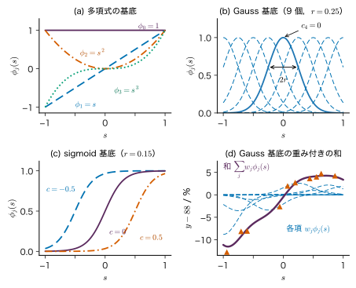
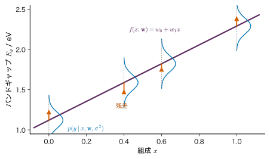
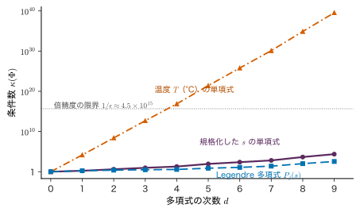
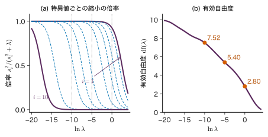
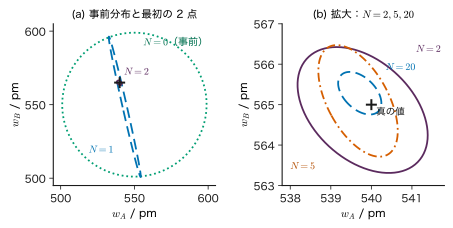
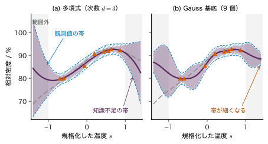
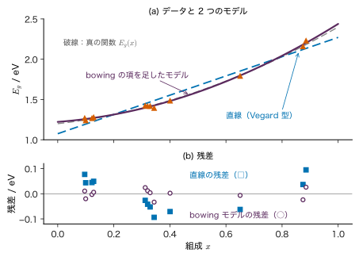
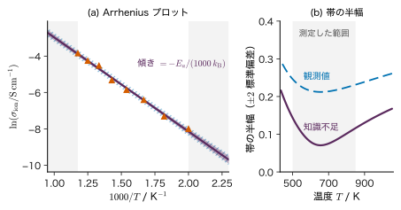

第8章線形回帰モデル — 基底関数と最小二乗法
- 焼成温度に対して曲がりながら頭打ちになる相対密度を，3 次式で当てはめる．曲線を当てはめているのに，なぜこれを「線形」回帰と呼ぶのか．
- 測っていない温度での相対密度を予測するとき，予測値に「どれくらい外れうるか」を表す誤差棒を付けるにはどうするか．その誤差棒は測定を増やすとどこまで細くなるのか．
- 混晶のバンドギャップの「たわみ」（bowing）やイオン伝導の活性化エネルギーを，データから不確かさつきで求めるにはどうするか．
第1章 1.4 節では，4 点に直線 $f(x;\bm{w})=w_0+w_1x$ を当てはめ，二乗誤差の和を最小にする $w_0,w_1$ を 2 元連立 1 次方程式から求めた．では，データが曲がっていたらどうするか．たとえば $x$ のほかに $x^{2}$ や $x^{3}$ を「入力の列」として並べ，$f=w_0+w_1x+w_2x^{2}+w_3x^{3}$ とすれば曲線になる．曲線を表しているのに，未知数 $w_0,\dots,w_3$ については 1 次式のままなので，解き方は直線のときとまったく同じ連立 1 次方程式になる．この「入力を自由な関数で変換してから，係数については 1 次式で組み合わせる」モデルが，本章の線形回帰モデルである．
本章では，まず基底関数と計画行列を定義し，最小二乗法の解を与える正規方程式を 1 行ずつ導いて，それが「データのベクトルを部分空間へ直交射影すること」だと幾何学的に読む．次に，ノイズが Gauss 分布に従うと仮定すれば最小二乗法が最尤推定と一致することを示す．詳しいルートでは，正規方程式を数値的に安全に解く方法（QR 分解・特異値分解と条件数），係数を縮める Ridge 回帰，係数に事前分布を置くベイズ線形回帰と，その予測分布（ノイズの分と知識不足の分を分けた誤差棒）へ進み，最後に重みの分布を関数の分布として見直して第10・12章へつなぐ．
- 基底関数による線形モデル $f(\bm{x};\bm{w})=\bm{w}^{\tp}\bm{\phi}(\bm{x})$ が「$\bm{w}$ について線形」であることを説明し，与えられたモデルが線形回帰で解けるかを判定できる．
- 二乗誤差の勾配を成分で計算して正規方程式 $\bm{\Phi}^{\tp}\bm{\Phi}\bm{w}=\bm{\Phi}^{\tp}\bm{y}$ を導き，残差が計画行列の列と直交することの意味を説明できる．
- Gauss ノイズの対数尤度から最小二乗法とノイズ分散の最尤推定値を導ける．
- 3〜4 点の直線の当てはめを手で計算できる．
- 正規方程式を逆行列で解かない理由を条件数で説明し，Cholesky 分解・QR 分解・特異値分解を使い分けられる．
- Ridge 回帰の解を特異値ごとの縮小として読み，ベイズ線形回帰の事後分布を平方完成で導いて MAP 推定 ＝ Ridge 回帰を示せる．
- 予測分布の分散をノイズの項と知識不足の項に分け，データから離れると後者が増えることを数値で確かめられる．
入門ルートで読む節：8.1，8.2，8.3，8.4，8.12．「詳しいルート」の印が付いた節は，初めて読むときは飛ばしてよい．
8.1 基底関数による線形モデル — 「線形」は係数について
8.1.1 何をしたいのか
本書のデータ B「架空の混晶 A$_{1-x}$B$_x$C のバンドギャップ」（教育用の合成データ．実在の物質のデータではない）では，組成 $x\in[0,1]$ に対してバンドギャップが
$$ \begin{aligned}E_g(x)&=(1-x)\times1.20+x\times2.40\\&\quad-0.80\,x(1-x)\ \ \mathrm{eV}\end{aligned} $$と曲がる．これを右辺の形のまま眺めると，$E_g$ は 3 つの「入力の関数」$1-x$，$x$，$x(1-x)$ に，それぞれ係数 $1.20$，$2.40$，$-0.80$ を掛けて足したものである．係数が分からないとき，それをデータから決めるのが回帰である．関数 $1-x$，$x$，$x(1-x)$ をあらかじめ決めておけば，未知数は係数の 3 個だけで，しかも予測値は係数の 1 次式になる．
このように，入力 $\bm{x}$ をいくつかの決まった関数 $\phi_j(\bm{x})$ で変換し，係数 $w_j$ を掛けて足すモデルを考える．関数 $\phi_j$ は曲がっていてよい．図8.1 に代表的な 3 種類の $\phi_j$ と，それらを重みを付けて足すと曲線ができる様子を示す．

8.1.2 定義と記号
定義8.1 基底関数による線形モデル
入力 $\bm{x}\in\R^{D}$ に対し，あらかじめ決めた $M$ 個の関数 $\phi_0(\bm{x}),\dots,\phi_{M-1}(\bm{x})$ を基底関数（basis function）という．これを並べた列ベクトルを $\bm{\phi}(\bm{x})=(\phi_0(\bm{x}),\dots,\phi_{M-1}(\bm{x}))^{\tp}\in\R^{M}$，係数（重み）を $\bm{w}=(w_0,\dots,w_{M-1})^{\tp}\in\R^{M}$ として，
\begin{equation} \begin{aligned}f(\bm{x};\bm{w})&=\sum_{j=0}^{M-1}w_j\phi_j(\bm{x})\\&=\bm{w}^{\tp}\bm{\phi}(\bm{x})\end{aligned} \label{eq:8-model} \end{equation}を基底関数による線形モデルという．多くの場合 $\phi_0(\bm{x})=1$ とし，$w_0$ を定数項（切片，バイアス）と呼ぶ．
式 \eqref{eq:8-model} の $f$ は，$\bm{x}$ については曲がっていてよいが，$\bm{w}$ については 1 次式である．すなわち，2 組の係数 $\bm{w},\bm{w}'$ と数 $a,b$ について $f(\bm{x};a\bm{w}+b\bm{w}')=af(\bm{x};\bm{w})+bf(\bm{x};\bm{w}')$ が成り立つ．「線形回帰」の「線形」は係数 $\bm{w}$ についての線形性であり，入力 $\bm{x}$ についての線形性ではない．この性質のおかげで，次節の損失は $\bm{w}$ の二次関数になり，最小点が連立 1 次方程式で求まる．
本書でよく使う基底関数は次の 3 種類である（図8.1(a)〜(c)）．1 次元の入力 $s$ で書く．
- 多項式の基底：$\phi_j(s)=s^{j}$（$j=0,1,\dots,d$）．次数 $d$ の多項式では基底は $M=d+1$ 個である（本書では次数を $d$，基底の数を $M$ と書き分ける）．$s$ のどこを変えても全部の基底が変わるので，1 点のデータが曲線全体に影響する．
- Gauss 基底：$\phi_j(s)=\exp\!\bigl[-(s-c_j)^{2}/(2r^{2})\bigr]$．中心 $c_j$ のまわり，幅 $r$ 程度の範囲だけで値を持つ「局所的な」基底である．中心から離れると 0 に近づく（8.8 節で，この性質が予測の帯に思わぬ影響を与えることを見る）．Gauss 分布の密度と形は同じだが，確率密度ではない（正規化の定数がない）．
- sigmoid 基底：$\phi_j(s)=\sigma\bigl((s-c_j)/r\bigr)$，$\sigma(a)=1/(1+e^{-a})$．位置 $c_j$ で 0 から 1 へ切り替わる段差である（ここでの $\sigma(\cdot)$ は関数で，ノイズの標準偏差 $\sigma$ とは別物）．第14章のニューラルネットワークでは，この $c_j$ や $r$ に当たる量までデータから学習する．
記号：データ・計画行列・損失の規約
データは $\data=\{(\bm{x}_n,y_n)\}_{n=1}^{N}$，目標値をまとめて $\bm{y}=(y_1,\dots,y_N)^{\tp}\in\R^{N}$ と書く．$\bm{\phi}_n\equiv\bm{\phi}(\bm{x}_n)\in\R^{M}$ と略す．本章と第9章では損失をデータについての和で書く（$L(\bm{w})=\frac12\sum_n(\cdots)^{2}$）．第7章は平均 $\frac1N\sum_n$ で書いた．どちらでも最小点は同じで，勾配と Hesse 行列が $N$ 倍違うだけである．ただし Ridge 回帰の $\lambda$ は，和で書くか平均で書くかで同じ値でも効き方が $N$ 倍変わる（8.6 節）．
例題8.1 線形回帰で解けるモデルはどれか
パラメーターを $w_0,w_1,\dots$ とし，それ以外の記号（$\omega$，$k_{\mathrm B}$ など）は既知の定数とする．次のモデルのうち，基底関数を選べば式 \eqref{eq:8-model} の形になるもの（パラメーターについて線形なもの）はどれか．なる場合は基底関数を書け．
(a) $f(x)=w_0+w_1x+w_2x\ln x$ (b) $f(x)=w_0e^{-w_1x}$ (c) $f(t)=w_0+w_1\sin\omega t+w_2\cos\omega t$ (d) $f(t)=w_0+w_1\sin(w_2t)$ (e) $\ln\sigma=w_0+w_1/T$（$\sigma$ を $\ln\sigma$ に変換してから当てはめる）
解答 (a) なる．$\bm{\phi}(x)=(1,\ x,\ x\ln x)^{\tp}$．$x\ln x$ は $x$ について非線形だが，係数 $w_2$ を掛けるだけなので問題ない．
(b) ならない．$w_1$ が指数関数の中にあり，$\partial f/\partial w_1=-w_0xe^{-w_1x}$ が $w_0,w_1$ に依存する．（対数をとれば $\ln f=\ln w_0-w_1x$ と線形になるが，それは「$\ln f$ にノイズが加わる」という別のモデルになる．8.10 節と 8.11 節）
(c) なる．$\omega$ が既知なら $\bm{\phi}(t)=(1,\ \sin\omega t,\ \cos\omega t)^{\tp}$．振幅と位相を未知とする $A\sin(\omega t+\theta)$ も，$A\sin(\omega t+\theta)$ $=A\cos\theta\sin\omega t+A\sin\theta\cos\omega t$ と書き直せば $w_1=A\cos\theta$，$w_2=A\sin\theta$ の線形モデルである．
(d) ならない．振動数 $w_2$ が $\sin$ の中にある．
(e) なる．目標値を $\ln\sigma$，基底を $(1,\ 1/T)^{\tp}$ とすればよい（Arrhenius の式．8.10 節）．
8.2 最小二乗法と正規方程式 — 列空間への直交射影
8.2.1 計画行列と損失
$N$ 個のデータの予測値を一度に書くために，$\bm{\phi}_n^{\tp}$ を第 $n$ 行に並べた行列を作る．
定義8.2 計画行列
$N\times M$ 行列
$$ \bm{\Phi}=\begin{pmatrix}\phi_0(\bm{x}_1)&\cdots&\phi_{M-1}(\bm{x}_1)\\ \vdots&&\vdots\\ \phi_0(\bm{x}_N)&\cdots&\phi_{M-1}(\bm{x}_N)\end{pmatrix}\in\R^{N\times M} $$（成分は $\Phi_{nj}=\phi_j(\bm{x}_n)$）を計画行列（design matrix）という．第 $n$ 行が $\bm{\phi}_n^{\tp}$，第 $j$ 列が「基底 $\phi_j$ を全データで評価したもの」である．
計画行列を使うと，全データの予測値は $\bm{\Phi}\bm{w}\in\R^{N}$（第 $n$ 成分が $\bm{\phi}_n^{\tp}\bm{w}=f(\bm{x}_n;\bm{w})$）とまとめて書ける．最小二乗法（least squares）は，残差 $r_n=y_n-f(\bm{x}_n;\bm{w})$ の二乗和を最小にする方法である．
\begin{equation} \begin{aligned} L(\bm{w})&=\frac12\sum_{n=1}^{N}\bigl(y_n-\bm{w}^{\tp}\bm{\phi}_n\bigr)^{2}\\ &=\frac12\norm{\bm{y}-\bm{\Phi}\bm{w}}^{2} \end{aligned} \label{eq:8-loss} \end{equation}係数の $\frac12$ は微分したときに 2 を消すためで，最小点は変わらない．
8.2.2 勾配を成分で計算する
導出：正規方程式
成分で書くと $\bm{w}^{\tp}\bm{\phi}_n=\sum_{j}\Phi_{nj}w_j$ なので，
$$ L(\bm{w})=\frac12\sum_{n=1}^{N}\Bigl(y_n-\sum_{j=0}^{M-1}\Phi_{nj}w_j\Bigr)^{2}. $$ある 1 つの成分 $w_k$ で偏微分する．合成関数の微分で，括弧の中を $w_k$ で微分すると，和のうち $j=k$ の項だけが残って $-\Phi_{nk}$ になる．
$$ \begin{aligned} \pdiff{L}{w_k}&=\frac12\sum_{n=1}^{N}2\Bigl(y_n-\sum_{j}\Phi_{nj}w_j\Bigr)\\ &\qquad\times(-\Phi_{nk})\\ &=-\sum_{n=1}^{N}\Phi_{nk}\,r_n . \end{aligned} $$ここで $r_n\equiv y_n-\sum_{j}\Phi_{nj}w_j$ は残差である．$\sum_n\Phi_{nk}r_n$ は行列 $\bm{\Phi}^{\tp}$ の第 $k$ 行（$\bm{\Phi}$ の第 $k$ 列）と残差のベクトル $\bm{r}=\bm{y}-\bm{\Phi}\bm{w}$ の内積，すなわち $(\bm{\Phi}^{\tp}\bm{r})_k$ である．$k=0,\dots,M-1$ をまとめて
\begin{equation} \nabla L(\bm{w})=-\bm{\Phi}^{\tp}(\bm{y}-\bm{\Phi}\bm{w}) \label{eq:8-grad} \end{equation}を得る．最小点では勾配が $\bm{0}$ なので $\bm{\Phi}^{\tp}\bm{y}-\bm{\Phi}^{\tp}\bm{\Phi}\bm{w}=\bm{0}$，移項して
\begin{equation} \bm{\Phi}^{\tp}\bm{\Phi}\,\bm{w}=\bm{\Phi}^{\tp}\bm{y} \label{eq:8-normal} \end{equation}となる．もう一度 $w_l$ で微分すると $\dfrac{\partial^{2}L}{\partial w_k\partial w_l}=\sum_n\Phi_{nk}\Phi_{nl}=(\bm{\Phi}^{\tp}\bm{\Phi})_{kl}$ なので，Hesse 行列は $\bm{\Phi}^{\tp}\bm{\Phi}$（$M\times M$）である．任意の $\bm{v}\in\R^{M}$ について $\bm{v}^{\tp}\bm{\Phi}^{\tp}\bm{\Phi}\bm{v}=\norm{\bm{\Phi}\bm{v}}^{2}\ge0$ なので半正定値で，$L$ は凸関数である（第7章 7.4．詳しいルート）．凸関数とは，グラフ上のどの 2 点を結ぶ線分もグラフより下に来ない関数で，谷が 1 つしかなく，勾配が 0 の点は必ず最小点になる．Hesse 行列がどこでも半正定値なら凸である．したがって式 \eqref{eq:8-normal} を満たす $\bm{w}$ は最小点である．
（導出終わり）
式 \eqref{eq:8-normal} を正規方程式（normal equations）という．$M$ 個の未知数に $M$ 本の式である．解が 1 つに決まるのは $\bm{\Phi}^{\tp}\bm{\Phi}$ が正則なとき，すなわち $\bm{\Phi}$ の $M$ 本の列が線形独立なとき（$\rank\bm{\Phi}=M$）である．そのためには少なくとも $N\ge M$ が必要で，さらに「同じ入力ばかり測った」「ある列が他の列の組合せになっている」といった場合は解が一つに決まらない．形式的に書けば $\hat{\bm{w}}=(\bm{\Phi}^{\tp}\bm{\Phi})^{-1}\bm{\Phi}^{\tp}\bm{y}$ だが，計算では逆行列を作らない（8.5 節）．
8.2.3 幾何学的な意味 — 残差は列と直交する
計画行列の第 $j$ 列を $\bm{c}_j\in\R^{N}$ と書く（$N$ 個のデータ点で基底 $\phi_j$ を評価した値を並べたもの）．予測値のベクトルは $\bm{\Phi}\bm{w}=w_0\bm{c}_0+\dots+w_{M-1}\bm{c}_{M-1}$ と列の線形結合なので，$\bm{w}$ をどう選んでも，$\R^{N}$ の中の列空間（列ベクトルが張る $M$ 次元以下の部分空間）の中にしか来ない．一方，観測 $\bm{y}$ はノイズを含むので，ふつうは列空間の外にある．
$\norm{\bm{y}-\bm{\Phi}\bm{w}}$ は $\bm{y}$ と列空間の点 $\bm{\Phi}\bm{w}$ の距離だから，最小二乗法は「列空間の中で $\bm{y}$ に最も近い点」を探していることになる．平面に点から垂線を下ろすのと同じく，最も近い点 $\hat{\bm{y}}=\bm{\Phi}\hat{\bm{w}}$ では，残差 $\bm{r}=\bm{y}-\hat{\bm{y}}$ が列空間に直交する（図8.2）．「すべての列と直交する」を式で書くと $\bm{c}_j^{\tp}\bm{r}=0$（全部の $j$），まとめて $\bm{\Phi}^{\tp}\bm{r}=\bm{0}$ であり，これは正規方程式 \eqref{eq:8-normal} そのものである．
直交していることから，三平方の定理 $\norm{\bm{y}}^{2}=\norm{\hat{\bm{y}}}^{2}+\norm{\bm{r}}^{2}$ が成り立つ（$\hat{\bm{y}}^{\tp}\bm{r}=\hat{\bm{w}}^{\tp}\bm{\Phi}^{\tp}\bm{r}=0$ だから）．また，$\bm{\Phi}$ の列が線形独立なら $\hat{\bm{y}}=\bm{H}\bm{y}$，$\bm{H}=\bm{\Phi}(\bm{\Phi}^{\tp}\bm{\Phi})^{-1}\bm{\Phi}^{\tp}\in\R^{N\times N}$ と書ける．$\bm{H}$ をハット行列（$\bm{y}$ に「帽子」を付ける行列）といい，第6章 6.5 節の leave-one-out の近道にも現れた（第6章 6.5）．$\bm{H}$ の性質は演習8.2 で調べる．
特に定数の基底 $\phi_0=1$ を含むモデルでは，列 $\bm{c}_0=(1,\dots,1)^{\tp}$ と残差が直交するので $\sum_n r_n=0$，つまり残差の和は 0 になる．
例題8.2 3 点の直線で直交射影を確かめる
3 点 $(x,y)=(0,1)$，$(1,1)$，$(2,4)$ に直線 $f(x)=w_0+w_1x$ を当てはめる（教育用の数値例）．(1) 計画行列 $\bm{\Phi}$ と正規方程式を書き，$\hat{\bm{w}}$ を求めよ．(2) 残差 $\bm{r}$ を求め，$\bm{\Phi}^{\tp}\bm{r}=\bm{0}$ を確かめよ．(3) 三平方の定理 $\norm{\bm{y}}^{2}=\norm{\hat{\bm{y}}}^{2}+\norm{\bm{r}}^{2}$ を数値で確かめよ．
解答 (1) 基底は $(1,x)$ なので
$$ \bm{\Phi}=\begin{pmatrix}1&0\\1&1\\1&2\end{pmatrix},\quad \bm{\Phi}^{\tp}\bm{\Phi}=\begin{pmatrix}3&3\\3&5\end{pmatrix}, $$ $$ \bm{\Phi}^{\tp}\bm{y}=\begin{pmatrix}1+1+4\\0+1+8\end{pmatrix}=\begin{pmatrix}6\\9\end{pmatrix}. $$$3w_0+3w_1=6$，$3w_0+5w_1=9$．下の式から上の式を引くと $2w_1=3$，$w_1=1.5$．上の式に戻して $w_0=2-1.5=0.5$．
(2) $\hat{\bm{y}}=(0.5,\ 2.0,\ 3.5)^{\tp}$，$\bm{r}=\bm{y}-\hat{\bm{y}}=(0.5,\ -1.0,\ 0.5)^{\tp}$．第 1 列との内積 $0.5-1.0+0.5=0$，第 2 列との内積 $0\times0.5+1\times(-1.0)+2\times0.5=0$．よって $\bm{\Phi}^{\tp}\bm{r}=\bm{0}$．
(3) $\norm{\bm{y}}^{2}=1+1+16=18$，$\norm{\hat{\bm{y}}}^{2}=0.25+4+12.25=16.5$，$\norm{\bm{r}}^{2}=0.25+1+0.25=1.5$．$16.5+1.5=18$ で一致する．
8.3 Gauss ノイズの最尤推定は最小二乗法
8.3.1 確率モデルとして書く
最小二乗法は「二乗誤差を小さくする」という手続きとして導入したが，なぜ二乗なのか（絶対値ではいけないのか）は説明していない．ここでは，データの生まれ方を確率で仮定すると最小二乗法が自然に出てくることを示す．
入力 $\bm{x}_n$ は与えられたもの（確率変数として扱わない）とし，目標値が
$$ \begin{aligned}&y_n=\bm{w}^{\tp}\bm{\phi}(\bm{x}_n)+\varepsilon_n,\\&\varepsilon_n\sim\Normal(0,\sigma^{2})\ \ （n=1,\dots,N\ \text{で独立}）\end{aligned} $$と生まれると仮定する．$\sigma^{2}$ はノイズの分散で，$y$ と同じ単位の二乗を持つ．この仮定は「入力 $\bm{x}_n$ と係数 $\bm{w}$ と $\sigma^{2}$ を条件にすると，$y_n$ は平均 $\bm{w}^{\tp}\bm{\phi}_n$，分散 $\sigma^{2}$ の Gauss 分布に従う」と同じである．
$$ \begin{aligned}p(y_n\mid\bm{x}_n,\bm{w},\sigma^{2})&=\Normal\bigl(y_n\mid\bm{w}^{\tp}\bm{\phi}_n,\ \sigma^{2}\bigr)\\&=\frac{1}{\sqrt{2\pi\sigma^{2}}}\\&\quad\times\exp\!\left[-\frac{(y_n-\bm{w}^{\tp}\bm{\phi}_n)^{2}}{2\sigma^{2}}\right].\end{aligned} $$モデルが予測するのは 1 つの値ではなく，入力ごとの $y$ の分布である（8.4 節の図8.3）．
8.3.2 対数尤度を最大にする
ノイズが独立なので，入力を条件にした $\bm{y}$ の同時分布は各点の密度の積である．これを $(\bm{w},\sigma^{2})$ の関数として見たものが尤度（第2章 2.7）である．対数をとると積は和になる．
\begin{equation} \begin{aligned} &\ln p(\bm{y}\mid\bm{X},\bm{w},\sigma^{2})\\ &=\sum_{n=1}^{N}\ln\Normal\bigl(y_n\mid\bm{w}^{\tp}\bm{\phi}_n,\sigma^{2}\bigr)\\ &=-\frac{1}{2\sigma^{2}}\sum_{n=1}^{N}\bigl(y_n-\bm{w}^{\tp}\bm{\phi}_n\bigr)^{2}\\ &\quad-\frac N2\ln(2\pi\sigma^{2})\\ &=-\frac{1}{\sigma^{2}}L(\bm{w})-\frac N2\ln(2\pi\sigma^{2}) \end{aligned} \label{eq:8-loglik} \end{equation}ここで $\bm{X}$ は入力 $\bm{x}_1,\dots,\bm{x}_N$ をまとめたもの，$L(\bm{w})$ は式 \eqref{eq:8-loss} である．2 行目は，$\ln\Normal=-\frac12\ln(2\pi\sigma^{2})-\frac{(\cdots)^{2}}{2\sigma^{2}}$ を $N$ 個足したものである．
- $\bm{w}$ について：$\sigma^{2}\gt0$ を固定すると，第 2 項は $\bm{w}$ に依らず，第 1 項は $-L(\bm{w})/\sigma^{2}$ である．よって対数尤度の最大化は $L(\bm{w})$ の最小化と同じで，最尤推定値 $\bm{w}_{\mathrm{ML}}$ は最小二乗の解（正規方程式 \eqref{eq:8-normal} の解）になる．$\sigma^{2}$ の値に依らない．
- $\sigma^{2}$ について：$\bm{w}=\bm{w}_{\mathrm{ML}}$ を入れて $\sigma^{2}$ で微分すると，$\dfrac{\partial}{\partial\sigma^{2}}\Bigl[-\dfrac{L}{\sigma^{2}}-\dfrac N2\ln\sigma^{2}\Bigr]=\dfrac{L}{\sigma^{4}}-\dfrac{N}{2\sigma^{2}}$．これを 0 とおくと
となる．ノイズの分散の最尤推定値は残差の二乗の平均であり，その平方根は訓練 RMSE（第6章 6.10）に等しい．
なぜ $\sigma^{2}_{\mathrm{ML}}$ は小さめに偏るのか
係数 $\bm{w}_{\mathrm{ML}}$ は「同じデータ」の残差を最小にするように選ばれているので，残差は真のノイズより小さめになる．モデルが真の関数を含むとき，期待値は $\Ex[\sigma^{2}_{\mathrm{ML}}]=\dfrac{N-M}{N}\sigma^{2}$ である（演習8.2 で導く）．$M$ 個の係数を決めるのにデータの自由度を $M$ 個使ったので，残差に残る自由度は $N-M$ 個しかない，と読む．そこで不偏な推定値として $\hat{\sigma}^{2}=\frac{1}{N-M}\sum_n r_n^{2}$ を使うことが多い．定数だけのモデル（$M=1$）では第4章 4.2 節の「$N$ で割るか $N-1$ で割るか」と同じ話になる（第4章 4.2）．$N=M$ なら残差は 0 になり，ノイズの大きさについて何も分からない（第6章 6.2 節の $d=9$，$N=10$ の補間）．
この節の結論は，「最小二乗法はノイズが Gauss 分布で，どの点でも同じ分散を持ち，互いに独立であるという仮定のもとでの最尤推定である」ということである．仮定が崩れると最小二乗法は最適でなくなる．外れ値が混じるなら裾の重い分布（第4章 4.9 節の t 分布）を，点ごとに分散 $\sigma_n^{2}$ が違うなら $\sum_n r_n^{2}/\sigma_n^{2}$ を最小にする重み付き最小二乗法を使う（8.10 節）．
例題8.3 ノイズの分散の推定値と最大の対数尤度
例題8.2 の 3 点・直線の当てはめについて，(1) $\sigma^{2}_{\mathrm{ML}}$ と不偏な推定値 $\hat{\sigma}^{2}=\frac{1}{N-M}\sum_n r_n^{2}$ を求めよ．(2) $\bm{w}=\bm{w}_{\mathrm{ML}}$，$\sigma^{2}=\sigma^{2}_{\mathrm{ML}}$ での対数尤度の値を求めよ．(3) (1) の 2 つの値が 3 倍も違う理由を述べよ．
解答 (1) 残差の二乗和は $\norm{\bm{r}}^{2}=1.5$ なので，$\sigma^{2}_{\mathrm{ML}}=1.5/3=0.5$，$\hat{\sigma}^{2}=1.5/(3-2)=1.5$．
(2) 式 \eqref{eq:8-loglik} で $L=\frac12\norm{\bm{r}}^{2}=0.75$，$\sigma^{2}=0.5$ とすると，第 1 項は $-0.75/0.5=-1.5=-N/2$ である（一般に $\sigma^{2}=\sigma^{2}_{\mathrm{ML}}$ を入れると第 1 項は $-N/2$ になる）．第 2 項は $-\frac32\ln(2\pi\times0.5)=-1.5\ln\pi$ $=-1.5\times1.1447=-1.717$．合計 $-3.217$．
(3) 係数 2 個を 3 点で決めたので，残差に残る自由度は $3-2=1$ しかない．$N$ で割ると，係数の調整でノイズの一部が「吸収」された分だけ小さく見積もる．$N-M=1$ で割ると，この偏りが平均として補正される．データが係数の数より十分多ければ，両者の差は小さい．
8.4 手計算 — 4 点に直線を当てはめる
8.4.1 直線の場合の解の形
基底が $(1,x)$ の直線では，正規方程式は 2×2 である．$\bm{\Phi}$ の第 1 列は全部 1，第 2 列は $x_n$ なので，
$$ \bm{\Phi}^{\tp}\bm{\Phi}=\begin{pmatrix}N&\sum_n x_n\\ \sum_n x_n&\sum_n x_n^{2}\end{pmatrix}, $$ $$ \bm{\Phi}^{\tp}\bm{y}=\begin{pmatrix}\sum_n y_n\\ \sum_n x_ny_n\end{pmatrix}. $$第 1 式 $Nw_0+w_1\sum_n x_n=\sum_n y_n$ を $N$ で割ると $w_0=\bar{y}-w_1\bar{x}$（$\bar{x},\bar{y}$ は平均）となり，当てはめた直線は点 $(\bar{x},\bar{y})$ を通る．これを第 2 式に入れて整理すると（演習8.1）
\begin{equation} w_1=\frac{S_{xy}}{S_{xx}},\qquad w_0=\bar{y}-w_1\bar{x} \label{eq:8-line} \end{equation}となる．ここで $S_{xx}=\sum_{n}(x_n-\bar{x})^{2}$，$S_{xy}=\sum_{n}(x_n-\bar{x})(y_n-\bar{y})$ である．傾きは「共分散 ÷ $x$ の分散」の形である（第2章 2.5）．
例題8.4 混晶のバンドギャップに直線を当てはめる
架空の混晶 A$_{1-x}$B$_x$C の 4 つの組成でバンドギャップを測り，次の値を得た（教育用の数値例．データ B の真の関数に小さな誤差を加えて丸めた値）．
| 組成 $x$ | 0 | 0.4 | 0.6 | 1.0 |
|---|---|---|---|---|
| $E_g$ / eV | 1.22 | 1.47 | 1.75 | 2.38 |
(1) 正規方程式を書いて $w_0,w_1$ を求めよ．(2) 式 \eqref{eq:8-line} で同じ値になることを確かめよ．(3) 残差を求め，$\sum_n r_n=0$ と $\sum_n x_nr_n=0$ を確かめよ．(4) $\sigma^{2}_{\mathrm{ML}}$ と $\hat{\sigma}^{2}$ を求めよ．(5) 残差の符号の並びから何が読み取れるか．
解答 (1) $N=4$，$\sum x_n=0+0.4+0.6+1.0=2.0$，$\sum x_n^{2}=0+0.16+0.36+1.00=1.52$，$\sum y_n=1.22+1.47+1.75+2.38=6.82$，$\sum x_ny_n=0+0.588+1.050+2.380$ $=4.018$．正規方程式は
$$ \begin{pmatrix}4&2.0\\2.0&1.52\end{pmatrix}\begin{pmatrix}w_0\\w_1\end{pmatrix}=\begin{pmatrix}6.82\\4.018\end{pmatrix}. $$行列式は $4\times1.52-2.0^{2}=2.08$．Cramer の公式で
$$ \begin{aligned} w_0&=\frac{1.52\times6.82-2.0\times4.018}{2.08}\\&=\frac{2.3304}{2.08}=1.1204\ \mathrm{eV},\\ w_1&=\frac{4\times4.018-2.0\times6.82}{2.08}\\&=\frac{2.432}{2.08}=1.1692\ \mathrm{eV}. \end{aligned} $$(2) $\bar{x}=0.5$，$\bar{y}=1.705$．$x_n-\bar{x}=-0.5,-0.1,0.1,0.5$，$y_n-\bar{y}=-0.485,-0.235,0.045,0.675$．$S_{xx}=0.25+0.01+0.01+0.25$ $=0.52$，$S_{xy}=0.2425+0.0235+0.0045+0.3375$ $=0.608$．$w_1=0.608/0.52=1.1692$，$w_0=1.705-1.1692\times0.5=1.1204$．一致する．
(3) 予測値 $\hat{y}_n=1.1204+1.1692x_n$ は $1.1204,\ 1.5881,\ 1.8219,\ 2.2896$．残差は $r_n=0.0996,\ -0.1181,\ -0.0719,\ 0.0904$．和は $0.0996-0.1181-0.0719+0.0904$ $=0.0000$．$\sum x_nr_n=0-0.0472-0.0431+0.0904$ $=0.0001$（丸めの範囲で 0）．
(4) $\sum r_n^{2}=0.00992+0.01394$ $+0.00517+0.00817$ $=0.0372\ \mathrm{eV^{2}}$．$\sigma^{2}_{\mathrm{ML}}=0.0372/4=0.0093\ \mathrm{eV^{2}}$（$\sigma_{\mathrm{ML}}=0.096\ \mathrm{eV}$），$\hat{\sigma}^{2}=0.0372/2=0.0186\ \mathrm{eV^{2}}$（$0.136\ \mathrm{eV}$）．
(5) 残差は $x$ の順に ＋，−，−，＋ と並ぶ．両端で正，中央で負なので，データは直線より下にたわんでいる．残差がランダムでなく系統的に並ぶのは，モデル（直線）が真の関係の形を表せていない兆しである．$x(1-x)$ の基底を足すと，このたわみ（bowing）を表せる（8.10 節，演習8.3）．
図8.3 は，例題8.4 の直線と，8.3 節の確率モデルが各入力に置く Gauss 分布 $p(y\mid x,\bm{w},\sigma^{2})$ を重ねて描いたものである．最小二乗法は，観測点が「それぞれの位置の山のなるべく高い所」に来るように直線を動かしている．

8.5 数値解法 — 逆行列を作らずに解く詳しいルート
8.5.1 なぜ $(\bm{\Phi}^{\tp}\bm{\Phi})^{-1}$ を作らないのか
正規方程式の解は $\hat{\bm{w}}=(\bm{\Phi}^{\tp}\bm{\Phi})^{-1}\bm{\Phi}^{\tp}\bm{y}$ と書けるが，計算機では逆行列を作らずに解く．理由は二つある．一つは手間で，逆行列を作ってから掛けるより，連立方程式を直接解くほうが計算量が少ない．もう一つは精度で，こちらが本質的である．
計算機の実数（倍精度）は有効数字が約 16 桁しかない．計算の途中で桁が失われる度合いを測るのが条件数である．
定義8.3 特異値分解と条件数
$N\ge M$ の行列 $\bm{\Phi}\in\R^{N\times M}$ は
\begin{equation} \bm{\Phi}=\bm{U}\bm{\Sigma}\bm{V}^{\tp}=\sum_{i=1}^{M}s_i\,\bm{u}_i\bm{v}_i^{\tp} \label{eq:8-svd} \end{equation}と分解できる．$\bm{U}=(\bm{u}_1,\dots,\bm{u}_M)\in\R^{N\times M}$ は互いに直交する長さ 1 の列を持ち（$\bm{U}^{\tp}\bm{U}=\bm{I}$），$\bm{V}=(\bm{v}_1,\dots,\bm{v}_M)\in\R^{M\times M}$ は直交行列（$\bm{V}^{\tp}\bm{V}=\bm{V}\bm{V}^{\tp}=\bm{I}$），$\bm{\Sigma}=\diag(s_1,\dots,s_M)$，$s_1\ge s_2\ge\dots\ge s_M\ge0$ である．これを特異値分解（SVD），$s_i$ を特異値という．$s_M\gt0$ のとき
\begin{equation} \kappa(\bm{\Phi})=\frac{s_1}{s_M}=\frac{s_{\max}}{s_{\min}} \label{eq:8-cond} \end{equation}を $\bm{\Phi}$ の条件数という．$s_M=0$（列が線形従属）なら $\kappa=\infty$ とする．
特異値分解の存在の証明は付録A の A.4 に送る．ここで必要なのは次の事実だけである．$\bm{\Phi}^{\tp}\bm{\Phi}=\bm{V}\bm{\Sigma}\bm{U}^{\tp}\bm{U}\bm{\Sigma}\bm{V}^{\tp}=\bm{V}\bm{\Sigma}^{2}\bm{V}^{\tp}$ なので，$\bm{\Phi}^{\tp}\bm{\Phi}$ の固有値は $s_i^{2}$，固有ベクトルは $\bm{v}_i$ である（大学数学 第12章 12.3 の対角化）．したがって
$$ \kappa(\bm{\Phi}^{\tp}\bm{\Phi})=\frac{s_1^{2}}{s_M^{2}}=\kappa(\bm{\Phi})^{2}. $$おおまかに言えば，条件数 $\kappa$ の問題を解くと，入力の相対誤差（丸め誤差を含む）が最大で $\kappa$ 倍程度に拡大されて答えに出る．倍精度の丸めの単位は約 $10^{-16}$ なので，$\kappa=10^{8}$ なら答えの有効数字は 8 桁程度しか残らない．正規方程式を作ると条件数が 2 乗になるので，$\kappa(\bm{\Phi})=10^{8}$ の問題を $\bm{\Phi}^{\tp}\bm{\Phi}$ 経由で解くと，桁がほとんど残らない．第7章の勾配降下法で条件数が収束の速さを決めた（第7章 7.3．そこでの $\kappa$ は Hesse 行列 $\propto\bm{\Phi}^{\tp}\bm{\Phi}$ の固有値の比で，本節の $\kappa(\bm{\Phi})^{2}$ に当たる）のと同じ量が，ここでは精度を決める．
8.5.2 三つの解き方
- Cholesky 分解：対称正定値行列 $\bm{\Phi}^{\tp}\bm{\Phi}=\bm{R}^{\tp}\bm{R}$（$\bm{R}$ は上三角）と分解し，$\bm{R}^{\tp}\bm{z}=\bm{\Phi}^{\tp}\bm{y}$，$\bm{R}\bm{w}=\bm{z}$ の 2 つの三角行列の方程式を代入で解く．最も速いが，正規方程式を作るので精度は $\kappa(\bm{\Phi})^{2}$ に支配される．
- QR 分解：$\bm{\Phi}=\bm{Q}\bm{R}$（$\bm{Q}\in\R^{N\times M}$ は $\bm{Q}^{\tp}\bm{Q}=\bm{I}$，$\bm{R}\in\R^{M\times M}$ は上三角）と分解する．正規方程式に入れると $\bm{\Phi}^{\tp}\bm{\Phi}=\bm{R}^{\tp}\bm{Q}^{\tp}\bm{Q}\bm{R}=\bm{R}^{\tp}\bm{R}$，$\bm{\Phi}^{\tp}\bm{y}=\bm{R}^{\tp}\bm{Q}^{\tp}\bm{y}$ なので $\bm{R}^{\tp}\bm{R}\bm{w}=\bm{R}^{\tp}\bm{Q}^{\tp}\bm{y}$．$\bm{R}$ が正則なら両辺に左から $(\bm{R}^{\tp})^{-1}$ を掛けて
- を後退代入で解けばよい．$\bm{\Phi}^{\tp}\bm{\Phi}$ を作らないので，誤差は $\kappa(\bm{\Phi})$ 程度に収まる．標準的な方法で，シミュレーター8.1 もこれ（Householder 法）を使う．
- 特異値分解：同じく正規方程式に $\bm{\Phi}^{\tp}\bm{\Phi}=\bm{V}\bm{\Sigma}^{2}\bm{V}^{\tp}$，$\bm{\Phi}^{\tp}\bm{y}=\bm{V}\bm{\Sigma}\bm{U}^{\tp}\bm{y}$ を入れ，左から $\bm{V}^{\tp}$ を掛けると $\bm{\Sigma}^{2}\bm{V}^{\tp}\bm{w}=\bm{\Sigma}\bm{U}^{\tp}\bm{y}$．全部の $s_i\gt0$ なら
- である．最も手間がかかるが，最も情報が多い．小さな特異値 $s_i$ で割る項がデータのノイズを大きく増幅することが式から直接見える．列が線形従属（$s_i=0$ がある）か，係数の数がデータ数より多い（$M\gt N$）ときは，$s_i\approx0$ の項を捨てると，訓練誤差を最小にする無数の解のうち $\norm{\bm{w}}$ が最小のもの（最小ノルム解）が得られる．
| 方法 | 計算量の目安 | 精度を支配する量 | 向いている場面 |
|---|---|---|---|
| Cholesky（正規方程式） | $NM^{2}$ | $\kappa(\bm{\Phi})^{2}$ | $\kappa$ が小さいと分かっている，大量のデータ |
| QR 分解 | $2NM^{2}$ | $\kappa(\bm{\Phi})$ | 標準の方法 |
| 特異値分解 | $NM^{2}$ の数倍 | $\kappa(\bm{\Phi})$（小さな $s_i$ を捨てられる） | 列が線形従属に近い，$M\gt N$，診断 |
8.5.3 多項式の基底は悪条件になりやすい
多項式の計画行列 $\Phi_{nj}=x_n^{j}$ は Vandermonde 行列と呼ばれ，次数を上げると条件数が急に大きくなる．$x^{8}$ と $x^{9}$ は $[0,1]$ ではほとんど同じ形の曲線で，列どうしがほぼ平行になるからである．さらに入力の目盛りが悪いと桁違いに悪化する．焼成温度を °C のまま $T=1100$〜$1500$ と入れると，$T^{9}$ は $10^{28}$ 程度の数になり，$1$ の列と並べたときの大きさの差だけで条件数が膨らむ．

図8.4 のとおり，°C のままの単項式では $d=4$ で条件数が $7.5\times10^{16}$ となり，倍精度では係数が意味のある桁を持たなくなる．$[-1,1]$ に規格化した $s$ では $d=9$ でも $2.33\times10^{4}$（第6章の表6.1 と同じ値）にとどまる．対処は次のとおりである．
- 入力を標準化する（平均を引き，幅で割る）．最も効果が大きく，ほぼ常に行う．
- 直交多項式（Legendre 多項式 $P_0=1$，$P_1=s$，$P_2=\frac12(3s^{2}-1)$，…）を基底に使う．$[-1,1]$ で互いに直交するように作られているので，列が平行になりにくい（$d=9$ で 349）．作る関数の集合（次数 $d$ 以下の多項式）は単項式と同じなので，当てはめた曲線そのものは変わらない．係数の意味だけが変わる．
- 次数を必要以上に上げない，または次節の Ridge 回帰で小さな特異値の方向を抑える．
例題8.5 温度を °C のまま入れた直線の条件数
2 つの温度 $T=1200,\ 1400$ °C で測り，直線 $f=w_0+w_1T$ を当てはめる．(1) $\bm{\Phi}^{\tp}\bm{\Phi}$ の 2 つの固有値を求め，条件数 $\kappa(\bm{\Phi}^{\tp}\bm{\Phi})$ と $\kappa(\bm{\Phi})$ を求めよ．(2) 規格化した $s=(T-1300)/200=-0.5,\ 0.5$ を入力にしたときの条件数を求めよ．
解答 (1) $\bm{\Phi}=\begin{pmatrix}1&1200\\1&1400\end{pmatrix}$，$\bm{\Phi}^{\tp}\bm{\Phi}=\begin{pmatrix}2&2600\\2600&3400000\end{pmatrix}$（$1200^{2}+1400^{2}=1440000+1960000$）．2×2 の対称行列の固有値は，跡 $t=3400002$ と行列式 $\delta=2\times3400000-2600^{2}$ $=6800000-6760000=40000$ を使って $\lambda=\frac12\bigl(t\pm\sqrt{t^{2}-4\delta}\bigr)$．$t^{2}\gg4\delta$ なので，大きいほうは $\approx t=3.40\times10^{6}$，小さいほうは「2 つの積 $=\delta$」から $\approx\delta/t=40000/3400002=0.01176$．よって $\kappa(\bm{\Phi}^{\tp}\bm{\Phi})\approx3.40\times10^{6}/0.01176$ $=2.89\times10^{8}$，$\kappa(\bm{\Phi})=\sqrt{2.89\times10^{8}}=1.70\times10^{4}$．
(2) $\bm{\Phi}=\begin{pmatrix}1&-0.5\\1&0.5\end{pmatrix}$，$\bm{\Phi}^{\tp}\bm{\Phi}=\begin{pmatrix}2&0\\0&0.5\end{pmatrix}$．固有値は 2 と 0.5 で，$\kappa(\bm{\Phi}^{\tp}\bm{\Phi})=4$，$\kappa(\bm{\Phi})=2$．同じ 2 点・同じ直線なのに，入力の目盛りを変えただけで条件数が $10^{4}$ 倍違う．°C のままでは列 $(1,1)^{\tp}$ と $(1200,1400)^{\tp}$ がほぼ平行（大きさも桁違い）だからである．
8.6 Ridge 回帰 — 特異値ごとに縮める詳しいルート
8.6.1 解の導出
第6章 6.6 節では，過学習した多項式の係数が巨大になることから，損失に係数の二乗和の罰則を足す Ridge 回帰を導入した（定義と過学習の抑制の例は第6章 6.6）．本節では，その解を導き，何が起きているかを特異値分解で読む．損失は（本書の規約どおり $\frac12$ と $\frac{\lambda}{2}$ を付けて）
$$ L_\lambda(\bm{w})=\frac12\norm{\bm{y}-\bm{\Phi}\bm{w}}^{2}+\frac{\lambda}{2}\norm{\bm{w}}^{2},\qquad \lambda\ge0 $$である．第 2 項を $w_k$ で微分すると $\frac{\lambda}{2}\times2w_k=\lambda w_k$．第 1 項の勾配は式 \eqref{eq:8-grad} なので，
$$ \nabla L_\lambda(\bm{w})=-\bm{\Phi}^{\tp}(\bm{y}-\bm{\Phi}\bm{w})+\lambda\bm{w}=\bm{0} $$より
\begin{equation} (\bm{\Phi}^{\tp}\bm{\Phi}+\lambda\bm{I})\,\bm{w}=\bm{\Phi}^{\tp}\bm{y} \label{eq:8-ridge} \end{equation}を得る（$\bm{I}$ は $M\times M$ の単位行列）．$\lambda\gt0$ なら，任意の $\bm{v}\ne\bm{0}$ について $\bm{v}^{\tp}(\bm{\Phi}^{\tp}\bm{\Phi}+\lambda\bm{I})\bm{v}$ $=\norm{\bm{\Phi}\bm{v}}^{2}+\lambda\norm{\bm{v}}^{2}\gt0$ なので，左辺の行列は正定値で必ず正則である．列が線形従属でも，係数の数がデータ数より多くても，解は 1 つに決まる．
計算では，次の書き換えが便利である．縦に積んだ行列とベクトル
\begin{equation} \tilde{\bm{\Phi}}=\begin{pmatrix}\bm{\Phi}\\ \sqrt{\lambda}\,\bm{I}\end{pmatrix},\qquad \tilde{\bm{y}}=\begin{pmatrix}\bm{y}\\ \bm{0}\end{pmatrix} \label{eq:8-aug} \end{equation}（$\tilde{\bm{\Phi}}\in\R^{(N+M)\times M}$，$\tilde{\bm{y}}\in\R^{N+M}$）を作ると，
$$ \begin{aligned}\norm{\tilde{\bm{y}}-\tilde{\bm{\Phi}}\bm{w}}^{2}&=\norm{\bm{y}-\bm{\Phi}\bm{w}}^{2}+\norm{\bm{0}-\sqrt{\lambda}\bm{w}}^{2}\\&=\norm{\bm{y}-\bm{\Phi}\bm{w}}^{2}+\lambda\norm{\bm{w}}^{2}\\&=2L_\lambda(\bm{w}).\end{aligned} $$つまり Ridge 回帰は「$M$ 個の仮想的な観測 $0=\sqrt{\lambda}\,w_j$ を足した最小二乗法」であり，$\tilde{\bm{\Phi}}$ の QR 分解（式 \eqref{eq:8-qr}）でそのまま解ける．シミュレーター8.1 の「[Φ; √λ I] の QR 分解」はこれである．
8.6.2 特異値ごとの縮小
式 \eqref{eq:8-ridge} に $\bm{\Phi}^{\tp}\bm{\Phi}=\bm{V}\bm{\Sigma}^{2}\bm{V}^{\tp}$ と $\lambda\bm{I}=\lambda\bm{V}\bm{V}^{\tp}$ を入れると，左辺は $\bm{V}(\bm{\Sigma}^{2}+\lambda\bm{I})\bm{V}^{\tp}\bm{w}$，右辺は $\bm{V}\bm{\Sigma}\bm{U}^{\tp}\bm{y}$．左から $\bm{V}^{\tp}$ を掛け，対角行列 $\bm{\Sigma}^{2}+\lambda\bm{I}$ で割ると
\begin{equation} \begin{aligned} \hat{\bm{w}}_\lambda&=\sum_{i=1}^{M}\frac{s_i}{s_i^{2}+\lambda}\,(\bm{u}_i^{\tp}\bm{y})\,\bm{v}_i\\ &=\sum_{i=1}^{M}\underbrace{\frac{s_i^{2}}{s_i^{2}+\lambda}}_{\text{縮小の倍率}}\cdot\frac{\bm{u}_i^{\tp}\bm{y}}{s_i}\,\bm{v}_i \end{aligned} \label{eq:8-shrink} \end{equation}となる．式 \eqref{eq:8-svd-sol} の最小二乗の解と比べると，$\bm{v}_i$ の向きの成分が倍率 $s_i^{2}/(s_i^{2}+\lambda)$ だけ縮められている．$s_i^{2}\gg\lambda$ の向き（データが係数をよく決めている向き）はほとんど縮まず，$s_i^{2}\ll\lambda$ の向き（データからの情報が弱く，ノイズを $1/s_i$ 倍に増幅していた向き）はほぼ 0 に縮む．第6章の例題6.6 で見た「係数 1 個の縮小の倍率 $\sum_nx_n^{2}/(\sum_nx_n^{2}+\lambda)$」は，$M=1$ のとき $s_1^{2}=\sum_n x_n^{2}$ であることからこの式の特別な場合である．
倍率の和
\begin{equation} \mathrm{df}(\lambda)=\sum_{i=1}^{M}\frac{s_i^{2}}{s_i^{2}+\lambda} \label{eq:8-df} \end{equation}を有効自由度という．$\lambda=0$ で $M$（係数の数），$\lambda\to\infty$ で 0 である．「実質的に何個の係数をデータから決めているか」を連続的に表す．図8.5 は，第6章と同じ 10 点に次数 $d=9$（$M=10$）の多項式を当てはめたときの倍率と有効自由度である．特異値は最大 3.52 から最小 $1.51\times10^{-4}$ まで 4 桁以上に散らばり（比が条件数 $2.33\times10^{4}$），$\ln\lambda=-10,-5,0$ で有効自由度は 7.52，5.40，2.80 になる．

8.6.3 定数項には罰則をかけない
実務では，定数項 $w_0$（$\phi_0=1$ の係数）には罰則をかけないことが多い．$w_0$ を罰すると，目標値に一定の数を足しただけで（単位や基準の取り方を変えただけで）当てはめの形が変わってしまうからである．定数項を罰しない損失
$$ \begin{aligned}L(w_0,\tilde{\bm{w}})&=\frac12\sum_{n=1}^{N}\bigl(y_n-w_0-\tilde{\bm{w}}^{\tp}\tilde{\bm{\phi}}_n\bigr)^{2}\\&\quad+\frac{\lambda}{2}\norm{\tilde{\bm{w}}}^{2}\end{aligned} $$（$\tilde{\bm{\phi}}_n\in\R^{M-1}$ は定数以外の基底，$\tilde{\bm{w}}$ はその係数）を $w_0$ で微分して 0 とおくと，$-\sum_n(y_n-w_0-\tilde{\bm{w}}^{\tp}\tilde{\bm{\phi}}_n)=0$，すなわち
\begin{equation} w_0=\bar{y}-\tilde{\bm{w}}^{\tp}\bar{\bm{\phi}} \label{eq:8-center} \end{equation}である．ここで $\bar{y}=\frac1N\sum_n y_n$，$\bar{\bm{\phi}}=\frac1N\sum_n\tilde{\bm{\phi}}_n$ である．これを損失に戻すと，残差は $(y_n-\bar{y})-\tilde{\bm{w}}^{\tp}(\tilde{\bm{\phi}}_n-\bar{\bm{\phi}})$ となる．つまり目標値と各基底からそれぞれの平均を引いて（中心化して），定数項なしの Ridge 回帰を解き，最後に式 \eqref{eq:8-center} で $w_0$ を戻せばよい．$\lambda\to\infty$ では $\tilde{\bm{w}}\to\bm{0}$ となり，当てはめはデータの平均 $\bar{y}$ の水平線に近づく．
記号：シミュレーター8.1 の簡略化
シミュレーター8.1（第6章のシミュレーター6.1 と同じ装置）は，目標値から固定の基準値 88 % を引いた $y_n-88\ \%$ に対して，定数項 $w_0$ も含む全部の係数に罰則をかけている．そのため $\lambda$ を大きくすると，当てはめはデータの平均ではなく 88 % の水平線に近づく．上の「定数項を罰しない」方法とは，$\lambda$ が大きいところで結果が少し違う．基準値 88 % はデータの平均に近い値なので，違いは小さい．
例題8.6 列が直交するときの Ridge 回帰
4 点で，計画行列と目標値が
$$ \bm{\Phi}=\begin{pmatrix}1&-0.3\\1&-0.1\\1&0.1\\1&0.3\end{pmatrix},\qquad \bm{y}=\begin{pmatrix}1.0\\1.4\\1.5\\2.1\end{pmatrix} $$である（教育用の数値例．第 2 列は中心化した入力）．(1) 最小二乗の解を求めよ．(2) $\lambda=0.2$ で全係数を罰する Ridge 回帰の解と，各係数の縮小の倍率，有効自由度を求めよ．(3) $w_0$ を罰さない場合の解を求め，(2) と比べよ．
解答 (1) 2 つの列の内積は $-0.3-0.1+0.1+0.3=0$ で直交する．$\bm{\Phi}^{\tp}\bm{\Phi}=\diag(4,\ 0.2)$（$0.09+0.01+0.01+0.09=0.2$），$\bm{\Phi}^{\tp}\bm{y}=(6.0,\ 0.34)^{\tp}$（$-0.30-0.14+0.15+0.63=0.34$）．対角なので成分ごとに割って $\hat{w}_0=6.0/4=1.5$，$\hat{w}_1=0.34/0.2=1.7$．
(2) $(\bm{\Phi}^{\tp}\bm{\Phi}+0.2\bm{I})=\diag(4.2,\ 0.4)$ なので $w_0=6.0/4.2=1.4286$，$w_1=0.34/0.4=0.85$．倍率は $4/4.2=0.952$ と $0.2/0.4=0.5$（列が直交するときは $\bm{v}_i$ が座標軸の向きで，$s_i^{2}$ が $\bm{\Phi}^{\tp}\bm{\Phi}$ の対角成分になる）．有効自由度は $0.952+0.5=1.452$．データの情報が強い $w_0$（$s^{2}=4$）はほとんど縮まず，情報が弱い傾き $w_1$（$s^{2}=0.2$）は半分になる．
(3) $w_0$ を罰さないと，式 \eqref{eq:8-center} より $w_0=\bar{y}-w_1\bar{\phi}_1=1.5-w_1\times0=1.5$（列が中心化されているので）．$w_1$ は (2) と同じ $0.85$．(2) の $w_0=1.4286$ は，データの平均 1.5 から 0 の側へ引き寄せられていた．目標値を全部 $+10$ ずらすと，(3) の $w_0$ は 11.5 とそのままずれるが，(2) の $w_0$ は $46/4.2=10.95$ となり，ずれ方が 10 にならない．
シミュレーター8.1 多項式回帰と正則化 — 解き方と係数の縮小
データ A の訓練データに多項式を当てはめ，解き方（QR 分解・最小ノルム解・Ridge の QR 分解），計画行列の条件数，損失の内訳，係数の大きさを確かめる装置である（第6章のシミュレーター6.1 と同じ画面．第6章では過学習を見たが，ここでは解き方と縮小に注目する）．目標値は $y-88\ \%$ で，罰則は定数項 $w_0$ を含む全係数にかけている（8.6.3 項）．
操作と観察
- 開いた直後の既定（訓練データ数 $N=10$，ノイズの標準偏差 1.0 %，多項式の次数 $d=3$，「正則化なし（λ = 0，最小二乗法）」にチェック，乱数の seed 20261112）で，右の読み出しを見る → 解き方「QR 分解（最小二乗）」，$\bm{\Phi}$ の条件数 9.35，‖w‖ 12.5．下の「いまの数値を式に入れると」に $L(\bm{w})=\frac12\times7.32+\frac{0}{2}\times157=3.66$ と出る．式 \eqref{eq:8-loss} と \eqref{eq:8-qr} と比べる．
- 「多項式の次数 d」を 9 にする → 条件数が 23300（$2.33\times10^{4}$）に上がり，‖w‖ が 4450 になる．さらに 10 にする → 解き方が「SVD の最小ノルム解」に変わり，条件数は「∞（列が足りない）」，係数の数がデータ数より多いという注意文が出る．式 \eqref{eq:8-svd-sol} の最小ノルム解と比べる．
- $d=10$ のまま「正則化なし」のチェックを外す（「正則化の強さ ln λ」は既定の −5.0）→ 解き方が「[Φ; √λ I] の QR 分解」になり，注意文が消えて解が 1 つに決まる（条件数の表示は $\bm{\Phi}$ 自身の値なので ∞ のまま）．訓練 RMSE 0.742 %，検証 RMSE 1.32 %，‖w‖ 16.1，$L(\bm{w})=\frac12\times5.50+\frac{0.00674}{2}\times260$ $=3.63$．式 \eqref{eq:8-ridge}，\eqref{eq:8-aug} と比べる．
- 次数を 9 に戻し，ln λ を −10，−5，0 と動かす → ‖w‖ が 126，16.0，6.76 と単調に小さくなる．図8.5 の有効自由度 7.52，5.40，2.80 と並べ，式 \eqref{eq:8-shrink} の縮小と比べる．ln λ = 0 では $L(\bm{w})=\frac12\times28.1+\frac{1.00}{2}\times45.7=36.9$ となる．seed を変えてしまったら「既定に戻す」で 20261112 に戻す．
操作後の問い
- 手順 2〜3 で，$d=10$ のとき $\lambda=0$ では解が 1 つに決まらないのに，$\lambda\gt0$ にすると決まるのはなぜか．
答えの例
$d=10$ では係数が $M=11$ 個あり，データは 10 点なので $\rank\bm{\Phi}\le10\lt11$ となり，$\bm{\Phi}^{\tp}\bm{\Phi}$（11×11）は正則でない．訓練誤差を 0 にする解が無数にあるので，装置は特異値分解で $\norm{\bm{w}}$ 最小のものを選んで表示する．$\lambda\gt0$ では $\bm{v}^{\tp}(\bm{\Phi}^{\tp}\bm{\Phi}+\lambda\bm{I})\bm{v}$ $=\norm{\bm{\Phi}\bm{v}}^{2}+\lambda\norm{\bm{v}}^{2}\gt0$ なので左辺の行列が正定値になり，解がちょうど 1 つ決まる．縦に積んだ $\tilde{\bm{\Phi}}$ は 21 行 11 列で列が線形独立になる，と見てもよい．
- 手順 4 で ln λ = 0 のとき，損失の 2 つの項（データの項と罰則の項）はそれぞれいくらか．このときの曲線が平らになりすぎるのはなぜか．
答えの例
データの項 $\frac12\times28.1=14.0$，罰則の項 $\frac12\times1.00\times45.7=22.9$ で，罰則のほうが大きい．係数を少し大きくして当てはまりを良くしても，罰則の増え方のほうが大きいので，係数は 0 の側（曲線は 88 % の水平線の側）に引き寄せられる．有効自由度は 2.80 で，実質 3 個弱の係数しかデータから決めていない．第6章の言葉では，バイアスが大きくなった状態（未学習）である．
- 手順 4 で，$\lambda$ を大きくすると ‖w‖ が必ず小さくなるのはなぜか．
答えの例
式 \eqref{eq:8-shrink} で $\bm{v}_i$ は互いに直交する長さ 1 のベクトルなので，$\norm{\hat{\bm{w}}_\lambda}^{2}=\sum_i\Bigl(\dfrac{s_i}{s_i^{2}+\lambda}\Bigr)^{2}(\bm{u}_i^{\tp}\bm{y})^{2}$．各項の $s_i/(s_i^{2}+\lambda)$ は $\lambda$ について単調に減るので，和も単調に減る（演習8.5）．
8.7 ベイズ線形回帰 — 係数の事後分布詳しいルート
8.7.1 設定
最小二乗法も Ridge 回帰も，係数を 1 組の値 $\hat{\bm{w}}$ として答える．しかしデータが少なければ，係数はいろいろな値でありえる．第4章でパラメーターの「分からなさ」を事後分布で表したのと同じことを，線形モデルの係数 $\bm{w}\in\R^{M}$ について行うのがベイズ線形回帰である．次の 2 つを仮定する．
- 尤度（8.3 節）：入力 $\bm{X}$ と $\bm{w}$ を条件にして $\bm{y}\sim\Normal(\bm{\Phi}\bm{w},\ \sigma^{2}\bm{I}_N)$．すなわち $p(\bm{y}\mid\bm{X},\bm{w})=\prod_n\Normal(y_n\mid\bm{w}^{\tp}\bm{\phi}_n,\sigma^{2})$．
- 事前分布：$p(\bm{w})=\Normal(\bm{w}\mid\bm{0},\ \sigma_w^{2}\bm{I}_M)$．各係数は平均 0，標準偏差 $\sigma_w$ の範囲にあると考える．
ノイズの分散 $\sigma^{2}$ と事前分布の分散 $\sigma_w^{2}$ は既知の値として与える（データから決める方法は 8.7.4 項）．以下，入力 $\bm{X}$ は常に条件に入っているので，事後分布を $p(\bm{w}\mid\data)$ と略記する．
8.7.2 平方完成による導出
導出：事後分布 $p(\bm{w}\mid\data)$
Bayes の定理より $p(\bm{w}\mid\data)\propto p(\bm{y}\mid\bm{X},\bm{w})\,p(\bm{w})$．対数をとり，$\bm{w}$ に依らない項を「const」にまとめる．
$$ \begin{aligned}\ln p(\bm{w}\mid\data)&=-\frac{1}{2\sigma^{2}}(\bm{y}-\bm{\Phi}\bm{w})^{\tp}(\bm{y}-\bm{\Phi}\bm{w})\\&\quad-\frac{1}{2\sigma_w^{2}}\bm{w}^{\tp}\bm{w}+\text{const}.\end{aligned} $$第 1 項の積を展開する．$\bm{y}^{\tp}\bm{\Phi}\bm{w}$ はスカラーなので転置しても同じで $\bm{w}^{\tp}\bm{\Phi}^{\tp}\bm{y}$ に等しいから，
$$ \begin{aligned}&(\bm{y}-\bm{\Phi}\bm{w})^{\tp}(\bm{y}-\bm{\Phi}\bm{w})\\&=\bm{y}^{\tp}\bm{y}-2\bm{w}^{\tp}\bm{\Phi}^{\tp}\bm{y}+\bm{w}^{\tp}\bm{\Phi}^{\tp}\bm{\Phi}\bm{w}.\end{aligned} $$$\bm{y}^{\tp}\bm{y}$ は $\bm{w}$ に依らないので const に入れ，$\bm{w}$ の 2 次の項と 1 次の項に分けて並べる．
\begin{equation} \begin{aligned} &\ln p(\bm{w}\mid\data)\\ &=-\frac12\bm{w}^{\tp}\Bigl(\frac{\bm{I}}{\sigma_w^{2}}\\&\qquad\quad+\frac{\bm{\Phi}^{\tp}\bm{\Phi}}{\sigma^{2}}\Bigr)\bm{w}\\ &\quad+\bm{w}^{\tp}\Bigl(\frac{\bm{\Phi}^{\tp}\bm{y}}{\sigma^{2}}\Bigr)+\text{const}. \end{aligned} \label{eq:8-logpost} \end{equation}一方，多変量 Gauss 分布 $\Normal(\bm{w}\mid\bm{m},\bm{S})$（第3章 3.6）の対数を同じように展開すると，$\bm{S}^{-1}$ が対称であることを使って
$$ \begin{aligned}&-\frac12(\bm{w}-\bm{m})^{\tp}\bm{S}^{-1}(\bm{w}-\bm{m})+\text{const}\\&=-\frac12\bm{w}^{\tp}\bm{S}^{-1}\bm{w}+\bm{w}^{\tp}\bm{S}^{-1}\bm{m}+\text{const}'.\end{aligned} $$式 \eqref{eq:8-logpost} の 2 次の項と 1 次の項をこれと見比べる（平方完成）．2 次の項から $\bm{S}^{-1}$ が，1 次の項から $\bm{S}^{-1}\bm{m}$ が読み取れる．2 次の項の行列は正定値なので，事後分布は Gauss 分布である．
（導出終わり）
結果をまとめる．
\begin{equation} \begin{aligned} p(\bm{w}\mid\data)&=\Normal(\bm{w}\mid\bm{m}_N,\ \bm{S}_N),\\ \bm{S}_N^{-1}&=\sigma_w^{-2}\bm{I}+\sigma^{-2}\bm{\Phi}^{\tp}\bm{\Phi},\\ \bm{m}_N&=\sigma^{-2}\bm{S}_N\bm{\Phi}^{\tp}\bm{y}. \end{aligned} \label{eq:8-post} \end{equation}$\bm{S}_N\in\R^{M\times M}$ は係数の事後共分散行列，$\bm{m}_N\in\R^{M}$ は事後平均である．$\bm{S}_N^{-1}$（精度行列）は「事前分布の精度 $\sigma_w^{-2}\bm{I}$」と「データの精度 $\sigma^{-2}\bm{\Phi}^{\tp}\bm{\Phi}$」の和になっている．第4章 4.6 節の 1 変数の式 $1/\sigma_N^{2}=1/\sigma_0^{2}+N/\sigma^{2}$ は，$M=1$，$\phi(x)=1$（$\bm{\Phi}^{\tp}\bm{\Phi}=N$）とした特別な場合である（第4章 4.6）．
8.7.3 MAP 推定は Ridge 回帰
Gauss 分布は平均で密度が最大になるので，MAP 推定値は $\bm{m}_N$ である．式 \eqref{eq:8-post} の第 3 式に左から $\bm{S}_N^{-1}$ を掛け，さらに $\sigma^{2}$ を掛けると
$$ \begin{aligned}&\sigma^{2}\bm{S}_N^{-1}\bm{m}_N=\bm{\Phi}^{\tp}\bm{y}\\&\Longrightarrow\ \Bigl(\bm{\Phi}^{\tp}\bm{\Phi}+\frac{\sigma^{2}}{\sigma_w^{2}}\bm{I}\Bigr)\bm{m}_N=\bm{\Phi}^{\tp}\bm{y}.\end{aligned} $$これは Ridge 回帰の式 \eqref{eq:8-ridge} で
\begin{equation} \lambda=\frac{\sigma^{2}}{\sigma_w^{2}} \label{eq:8-lambda} \end{equation}としたものである．Gauss 事前分布を置いた MAP 推定は Ridge 回帰と同じ（第6章 6.6 節と第7章 7.8 節の予告の証明）．$\lambda$ は「ノイズの大きさ」と「係数がとりうる大きさ」の比で，ノイズが大きいほど，あるいは係数が小さいと信じるほど，強く縮める．
2 つの極限も確かめておく．
- $\sigma_w\to\infty$（事前分布がほぼ平ら）：$\bm{S}_N\to\sigma^{2}(\bm{\Phi}^{\tp}\bm{\Phi})^{-1}$，$\bm{m}_N\to$ 最小二乗の解．$\sigma^{2}(\bm{\Phi}^{\tp}\bm{\Phi})^{-1}$ は，統計学で最小二乗の推定値の共分散行列として知られるものと同じである．
- データなし（$N=0$）：$\bm{S}_N=\sigma_w^{2}\bm{I}$，$\bm{m}_N=\bm{0}$ で，事前分布に戻る．
8.7.4 事前分布の平均が 0 でない場合と逐次更新
事前分布を一般の $\Normal(\bm{w}\mid\bm{m}_0,\bm{S}_0)$ にしても，同じ平方完成で
\begin{equation} \begin{aligned} \bm{S}_N^{-1}&=\bm{S}_0^{-1}+\sigma^{-2}\bm{\Phi}^{\tp}\bm{\Phi},\\ \bm{m}_N&=\bm{S}_N\bigl(\bm{S}_0^{-1}\bm{m}_0\\&\qquad+\sigma^{-2}\bm{\Phi}^{\tp}\bm{y}\bigr) \end{aligned} \label{eq:8-post-general} \end{equation}を得る（$\bm{m}_0=\bm{0}$，$\bm{S}_0=\sigma_w^{2}\bm{I}$ で式 \eqref{eq:8-post} に戻る）．$\bm{\Phi}^{\tp}\bm{\Phi}=\sum_n\bm{\phi}_n\bm{\phi}_n^{\tp}$，$\bm{\Phi}^{\tp}\bm{y}=\sum_n\bm{\phi}_ny_n$ とデータについての和に分かれるので，データを 1 点ずつ加えて「前の事後分布を次の事前分布にする」更新をくり返しても，全部を一度に使っても同じ結果になる（演習8.6）．第4章の逐次更新と同じ性質である．
図8.6 はこの更新の様子である．架空の混晶 A$_{1-x}$B$_x$C の格子定数が組成について直線的に変わる（Vegard 則．8.10 節）と仮定し，モデル $a(x)=(1-x)w_A+xw_B$ を置く．基底を $(1-x,\ x)$ にすると，係数 $w_A,w_B$ はそのまま端成分 AC，BC の格子定数になる．事前分布は「どちらも 550 ± 20 pm 程度」として $\bm{m}_0=(550,550)^{\tp}$ pm，$\bm{S}_0=20^{2}\bm{I}$ pm$^{2}$ とした．1 点目（$x=0.18$）を観測すると，事後分布は細長い楕円になる．1 点からは「$0.82w_A+0.18w_B$ がほぼいくらか」しか分からず，その組合せに直交する向きは事前分布のまま広いからである．2 点目（$x=0.84$）で両方の向きが決まり，点が増えると楕円は真の値のまわりで縮む（$N=20$ で標準偏差は $w_A,w_B$ とも約 0.22 pm）．

例題8.7 係数 1 個のベイズ線形回帰
第6章の例題6.6 と同じ 3 点 $(x,y)=(1,1.1)$，$(2,1.9)$，$(3,3.2)$ に，原点を通るモデル $f(x)=wx$（$M=1$，$\phi(x)=x$）を当てはめる．ノイズの標準偏差 $\sigma=1$，事前分布 $\Normal(w\mid0,\sigma_w^{2})$，$\sigma_w^{2}=0.5$ とする．(1) 事後分布の分散 $S_N$ と平均 $m_N$ を求めよ．(2) 対応する Ridge の $\lambda$ を求め，例題6.6 の結果と比べよ．(3) $w$ の 95 % 信用区間を求めよ．
解答 (1) $\bm{\Phi}^{\tp}\bm{\Phi}=\sum_nx_n^{2}=1+4+9=14$，$\bm{\Phi}^{\tp}\bm{y}=\sum_nx_ny_n=1.1+3.8+9.6=14.5$．式 \eqref{eq:8-post} より $S_N^{-1}=1/0.5+14/1=16$，$S_N=1/16=0.0625$．$m_N=S_N\times14.5/1=14.5/16=0.906$．
(2) $\lambda=\sigma^{2}/\sigma_w^{2}=1/0.5=2$．例題6.6 で $\lambda=2$ の Ridge の解は $14.5/(14+2)=0.906$ で，$m_N$ と一致する．
(3) 事後分布は $\Normal(w\mid0.906,\ 0.25^{2})$（$\sqrt{0.0625}=0.25$）．95 % 信用区間は $0.906\pm1.96\times0.25=[0.416,\ 1.396]$．Ridge 回帰は 0.906 という点だけを答えるが，ベイズ線形回帰は「0.4〜1.4 くらいの幅がある」ことまで答える．
発展：$\sigma^{2}$ と $\sigma_w^{2}$ をデータから決める（周辺尤度）
ここまで $\sigma^{2}$ と $\sigma_w^{2}$ は与えたものとした．これらをデータから選ぶには，$\bm{w}$ を積分で消した周辺尤度（marginal likelihood．証拠（エビデンス）とも呼ぶ）$p(\bm{y}\mid\bm{X},\sigma^{2},\sigma_w^{2})=\int p(\bm{y}\mid\bm{X},\bm{w})p(\bm{w})\,\dd\bm{w}$ を最大にする方法がある．積分しなくても形が分かる．$\bm{y}=\bm{\Phi}\bm{w}+\bm{\varepsilon}$ で，$\bm{w}\sim\Normal(\bm{0},\sigma_w^{2}\bm{I})$ と $\bm{\varepsilon}\sim\Normal(\bm{0},\sigma^{2}\bm{I})$ は独立な Gauss 分布だから，その線形結合 $\bm{y}$ も Gauss 分布で，平均は $\bm{0}$，共分散は $\Ex[\bm{y}\bm{y}^{\tp}]=\bm{\Phi}\Ex[\bm{w}\bm{w}^{\tp}]\bm{\Phi}^{\tp}+\Ex[\bm{\varepsilon}\bm{\varepsilon}^{\tp}]$ $=\sigma_w^{2}\bm{\Phi}\bm{\Phi}^{\tp}+\sigma^{2}\bm{I}\equiv\bm{C}$（$N\times N$．交差項は $\bm{w}$ と $\bm{\varepsilon}$ が独立で平均 0 なので消える）である．よって
$$ \begin{aligned}&\ln p(\bm{y}\mid\bm{X},\sigma^{2},\sigma_w^{2})\\&=-\frac12\bm{y}^{\tp}\bm{C}^{-1}\bm{y}-\frac12\ln\abs{\bm{C}}-\frac N2\ln2\pi .\end{aligned} $$第 1 項は当てはまり，第 2 項は「何でも説明できる広すぎるモデル」への罰の役割をする．これを最大にする $\sigma^{2},\sigma_w^{2}$ を選ぶ方法は，MacKay (1992) が基底関数による線形モデル（補間）について詳しく論じた（周辺尤度の最大化．エビデンス最大化とも呼ぶ）．同じ形の式が第12章 12.7 節のガウス過程のハイパーパラメーターの選び方に現れる．シミュレーター8.2 はこの最大化をしていない（$\sigma,\sigma_w$ は利用者が与える）．
8.8 予測分布 — ノイズと知識不足の二つの幅詳しいルート
8.8.1 導出
新しい入力 $\bm{x}_*$ での測定値 $y_*$ を予測したい．$\bm{\phi}_*\equiv\bm{\phi}(\bm{x}_*)\in\R^{M}$ と書く．ベイズの立場では，係数を 1 つに決めず，事後分布で平均した予測を使う．
$$ p(y_*\mid\bm{x}_*,\data)=\int p(y_*\mid\bm{x}_*,\bm{w})\,p(\bm{w}\mid\data)\,\dd\bm{w}. $$この積分は，次のように確率変数の和として考えると計算せずに求まる．
- 潜在関数の値 $f_*=\bm{\phi}_*^{\tp}\bm{w}$ は，Gauss 分布に従う $\bm{w}\sim\Normal(\bm{m}_N,\bm{S}_N)$ の線形結合なので Gauss 分布に従う（第3章 3.6）．平均は $\Ex[f_*]=\bm{\phi}_*^{\tp}\Ex[\bm{w}]=\bm{\phi}_*^{\tp}\bm{m}_N$．分散は $$ \begin{aligned}\Var[f_*]&=\Ex\bigl[(\bm{\phi}_*^{\tp}(\bm{w}-\bm{m}_N))^{2}\bigr]\\&=\bm{\phi}_*^{\tp}\Ex\bigl[(\bm{w}-\bm{m}_N)(\bm{w}-\bm{m}_N)^{\tp}\bigr]\bm{\phi}_*\\&=\bm{\phi}_*^{\tp}\bm{S}_N\bm{\phi}_*.\end{aligned} $$
- 測定値は $y_*=f_*+\varepsilon_*$ で，新しい測定のノイズ $\varepsilon_*\sim\Normal(0,\sigma^{2})$ は $\bm{w}$（訓練データから学んだもの）と独立である．独立な Gauss 分布の和は Gauss 分布で，平均と分散はそれぞれの和になる．
以上より
予測分散は 2 つの項の和である．
- $\sigma^{2}$（ノイズ）：同じ条件で測り直しても値がばらつく分．データを増やしても減らない（第4章 4.8 節の偶然的不確かさ）．
- $\bm{\phi}_*^{\tp}\bm{S}_N\bm{\phi}_*$（知識不足）：係数をまだ正確に知らないことによる分．データが増えると $\bm{S}_N^{-1}$ に $\sigma^{-2}\bm{\phi}_n\bm{\phi}_n^{\tp}$ が足されていくので，データのある所では小さくなる（認識的不確かさ）．
本書の図とシミュレーターでは，予測平均 $\pm2\sqrt{\bm{\phi}_*^{\tp}\bm{S}_N\bm{\phi}_*}$ を知識不足の帯（潜在関数 $f_*$ の帯），予測平均 $\pm2\sqrt{\sigma^{2}+\bm{\phi}_*^{\tp}\bm{S}_N\bm{\phi}_*}$ を観測値の帯（次の測定値 $y_*$ の帯）と呼び分ける．Gauss 分布で $\pm2$ 標準偏差の範囲に入る確率は約 95 % である．「真の曲線がどこにあるか」を問うなら前者，「次に測ったらどの範囲の値が出るか」を問うなら後者を使う．
8.8.2 データから離れると知識不足の帯が広がる
図8.7(a) は，データ A の 8 点に 3 次の多項式でベイズ線形回帰を行った結果である（$\sigma=1\ \%$，$\sigma_w=10$，シミュレーター8.2 の既定）．データのある $s\approx-0.7$〜$0.9$ では知識不足の帯は細く（$s=0.5$ で半幅 ±1.08 %），観測値の帯はノイズの $\pm2\sigma=\pm2\ \%$ をわずかに超える程度（±2.28 %）である．データの外，特にデータ A の範囲（$[-1,1]$）の外へ出ると，知識不足の帯が急に広がる（$s=1.2$ で ±7.41 %，$s=1.4$ で ±13.4 %）．多項式の基底 $s^{j}$ は $\abs{s}$ が大きいほど大きくなり，係数の不確かさが $\bm{\phi}_*^{\tp}\bm{S}_N\bm{\phi}_*$ を通して拡大されるからである．

ところが図8.7(b) の Gauss 基底では，右端の $s=1.4$ で帯が細くなる（知識不足の帯の半幅 ±2.07 %．$s=1.2$ では ±4.46 %）．Gauss 基底は中心 $[-1,1]$ から離れると $\bm{\phi}_*\approx\bm{0}$ になるので，$\bm{\phi}_*^{\tp}\bm{S}_N\bm{\phi}_*$ もデータの有無と無関係に 0 に近づく．このとき予測平均も $\bm{m}_N^{\tp}\bm{\phi}_*\approx0$，すなわち基準値 88 % に戻る．データが無いのに自信があるように見えるのは，帯がモデルの仮定（基底の置き方）のもとでの不確かさであることの表れである（8.11 節，演習8.8）．
例題8.8 係数 1 個のモデルの予測分布
例題8.7 の事後分布（$m_N=0.906$，$S_N=0.0625$，$\sigma=1$）で，$x_*=0,\ 2,\ 4,\ 6$ での予測平均，知識不足の分散，観測値の分散を求めよ．$x_*=0$ の結果から，このモデルの仮定について何が言えるか．
解答 $\phi_*=x_*$ なので，予測平均 $m_Nx_*$，知識不足の分散 $x_*^{2}S_N=x_*^{2}/16$，観測値の分散 $1+x_*^{2}/16$．
| $x_*$ | 予測平均 | 知識不足の分散 | 観測値の分散 | 観測値の帯の半幅 |
|---|---|---|---|---|
| 0 | 0 | 0 | 1 | 2.00 |
| 2 | 1.81 | 0.25 | 1.25 | 2.24 |
| 4 | 3.63 | 1.00 | 2.00 | 2.83 |
| 6 | 5.44 | 2.25 | 3.25 | 3.61 |
知識不足の分散は $x_*^{2}$ に比例して増え，データの範囲（1〜3）の外の $x_*=6$ ではノイズの分散の 2 倍を超える．一方 $x_*=0$ では知識不足の分散がちょうど 0 である．これはデータが $x=0$ の近くにあるからではなく，モデル $f=wx$ が「$x=0$ では必ず $f=0$」と仮定しているからである．定数項を持たないモデルの帯は，原点で必ず閉じる．帯の形を読むときは，基底関数の形を必ず思い出す．
シミュレーター8.2 ベイズ線形回帰
データ A の観測点からベイズ線形回帰の事後分布を求め，予測分布の 2 種類の帯（知識不足の帯と観測値の帯）が，観測点・注目する点・基底関数でどう変わるかを確かめる装置である．目標値は $y-88\ \%$ で，事前分布は全係数に $\Normal(\bm{0},\sigma_w^{2}\bm{I})$ を置いている．$\sigma$ と $\sigma_w$ は与えた値を使い，データからの推定（8.7 節の発展の囲み）はしない．
操作と観察
- 開いた直後の既定（基底関数「多項式（次数 d）」，$d=3$，ノイズの標準偏差 σ 1.00 %，事前分布の標準偏差 σw 10.0，データ A から 8 点，注目する点 $s_*=1.20$（1540 °C），seed 20261112）で「読み出し」を見る → 予測平均 87.779 %，知識不足の分散 13.7 %$^{2}$，観測値の分散 14.7 %$^{2}$，半幅は知識不足の帯 7.41 %・観測値の帯 7.67 %．対応する Ridge の λ は 0.0100 で，MAP と Ridge の解の差は丸め誤差の程度（$10^{-15}$ の桁）．式 \eqref{eq:8-pred} と \eqref{eq:8-lambda} と比べる．
- 「注目する点 s*」を 0.5，0 に動かす → 知識不足の分散が 0.294，0.512 に下がり，帯の半幅は 1.08 / 2.28 %，1.43 / 2.46 %．観測値の帯の半幅は $2\sigma=2.00\ \%$ より小さくならない．
- $s_*=0$ のまま「データを消す」を押す → 事前分布だけの予測になり，予測平均 88.000 %，知識不足の分散 100（半幅 20.0 %）．$s_*=1.2$ では 750（半幅 54.8 %）．8.9 節の式 \eqref{eq:8-fcov} の $\sigma_w^{2}\bm{\phi}^{\tp}\bm{\phi}$ と比べる．
- 「乱数の seed」の「同じ seed でやり直す」を押す（同じ 8 点に戻る）．続けて「データ A から 1 点」，「5 点」を押して 14 点にする → $s_*=0$ で知識不足の分散 0.219（半幅 0.937 / 2.21 %），$s_*=1.2$ で 7.91（半幅 5.63 / 5.97 %）．データが増えると知識不足の帯だけが細くなる．
- もう一度「同じ seed でやり直す」で 8 点に戻し，基底関数を「Gauss 基底（9 個）」にする → $s_*=1.2$ で知識不足の分散 4.98（半幅 4.46 %），$s_*=1.4$ で 1.07（半幅 2.07 %）．多項式の $s_*=1.4$（45.1，半幅 13.4 %）と逆に，データから離れたのに帯が細くなる．図8.7(b) と比べる．
操作後の問い
- 手順 2 と 4 で，観測点を増やしても観測値の帯の半幅が 2.00 % より小さくならないのはなぜか．知識不足の帯はどうなるか．
答えの例
観測値の分散 $\sigma^{2}+\bm{\phi}_*^{\tp}\bm{S}_N\bm{\phi}_*$ のうち $\sigma^{2}=1$ は次の測定のノイズで，データを増やしても減らない．したがって半幅は $2\sqrt{1+\cdots}\ge2.00\ \%$．一方 $\bm{S}_N^{-1}$ には観測ごとに $\sigma^{-2}\bm{\phi}_n\bm{\phi}_n^{\tp}$ が足されるので，データのある所では $\bm{\phi}_*^{\tp}\bm{S}_N\bm{\phi}_*$ が小さくなり，知識不足の帯は 0 に近づく（8 点で 0.512，14 点で 0.219）．
- 手順 3 の事前分布だけの分散 100（$s_*=0$）と 750（$s_*=1.2$）を手で計算せよ．
答えの例
データが無いと $\bm{S}_N=\sigma_w^{2}\bm{I}$ なので，$\bm{\phi}^{\tp}\bm{S}_N\bm{\phi}=\sigma_w^{2}\bm{\phi}^{\tp}\bm{\phi}=100\sum_{j=0}^{3}s_*^{2j}$．$s_*=0$ では $\bm{\phi}=(1,0,0,0)^{\tp}$ で 100．$s_*=1.2$ では $100\times(1+1.44+1.44^{2}+1.44^{3})$ $=100\times(1+1.44+2.0736+2.9860)$ $=750$．
- 手順 5 で Gauss 基底の帯が $s_*=1.4$ で細くなるのは，データが多いからか．
答えの例
違う．$s_*=1.4$ の近くにデータは無い．Gauss 基底の中心は $[-1,1]$ にしかなく，$s_*=1.4$ では一番近い中心 $c_8=1$ の基底でも $\exp(-0.4^{2}/(2\times0.25^{2}))=0.278$ しかないので，$\bm{\phi}_*$ が小さく，$\bm{\phi}_*^{\tp}\bm{S}_N\bm{\phi}_*$ も小さい．「データを消す」を押して事前分布だけにしても，$s_*=1.4$ の分散は 7.85 と小さい．帯の細さはデータではなく基底の置き方（モデルの仮定）から来ている（演習8.8）．
8.9 関数空間から見る — 重みの分布は関数の分布詳しいルート
これまでは係数 $\bm{w}$ の分布を考えてきた．見方を変えて，係数の事前分布 $\bm{w}\sim\Normal(\bm{0},\sigma_w^{2}\bm{I})$ が関数 $f(\bm{x})=\bm{w}^{\tp}\bm{\phi}(\bm{x})$ の値の分布をどう決めるかを調べる．2 つの入力 $\bm{x},\bm{x}'$ での関数値の平均と共分散は，
$$ \Ex[f(\bm{x})]=\bm{\phi}(\bm{x})^{\tp}\Ex[\bm{w}]=0, $$ \begin{equation} \begin{aligned} &\Cov[f(\bm{x}),f(\bm{x}')]\\ &=\Ex\bigl[\bm{\phi}(\bm{x})^{\tp}\bm{w}\,\bm{w}^{\tp}\bm{\phi}(\bm{x}')\bigr]\\ &=\bm{\phi}(\bm{x})^{\tp}\Ex[\bm{w}\bm{w}^{\tp}]\,\bm{\phi}(\bm{x}')\\ &=\sigma_w^{2}\,\bm{\phi}(\bm{x})^{\tp}\bm{\phi}(\bm{x}')\\ &\equiv k(\bm{x},\bm{x}') \end{aligned} \label{eq:8-fcov} \end{equation}である（1 行目で $\bm{w}^{\tp}\bm{\phi}(\bm{x}')$ がスカラーであることを使って並べ替えた）．$N$ 個の入力での関数値 $\bm{f}=(f(\bm{x}_1),\dots,f(\bm{x}_N))^{\tp}=\bm{\Phi}\bm{w}$ は，平均 $\bm{0}$，共分散 $\bm{K}=\sigma_w^{2}\bm{\Phi}\bm{\Phi}^{\tp}\in\R^{N\times N}$（$K_{nm}=k(\bm{x}_n,\bm{x}_m)$）の多変量 Gauss 分布に従う．つまり重みに Gauss 分布を置くことは，関数値の組に多変量 Gauss 分布を置くことと同じであり，その共分散は内積 $\bm{\phi}(\bm{x})^{\tp}\bm{\phi}(\bm{x}')$ だけで決まる．
関数 $k(\bm{x},\bm{x}')$ は「$\bm{x}$ と $\bm{x}'$ での関数値がどれだけ連動するか」を表し，第10章でカーネルと呼ぶものである．第12章では逆に，基底関数を書かずに $k$ を直接与えて関数値の分布を定める（ガウス過程）．$\bm{x}=\bm{x}'$ とすると $\Var[f(\bm{x})]=\sigma_w^{2}\norm{\bm{\phi}(\bm{x})}^{2}$ で，これがシミュレーター8.2 の手順 3（データなし）の分散である．
導出：予測平均を $k$ だけで書く
次の等式が成り立つ（$\bm{I}_M$，$\bm{I}_N$ は $M\times M$，$N\times N$ の単位行列）．
$$ \begin{aligned}&\Bigl(\sigma_w^{-2}\bm{I}_M+\sigma^{-2}\bm{\Phi}^{\tp}\bm{\Phi}\Bigr)^{-1}\sigma^{-2}\bm{\Phi}^{\tp}\\&=\sigma_w^{2}\bm{\Phi}^{\tp}\Bigl(\sigma_w^{2}\bm{\Phi}\bm{\Phi}^{\tp}+\sigma^{2}\bm{I}_N\Bigr)^{-1}.\end{aligned} $$確かめるには，両辺に左から $(\sigma_w^{-2}\bm{I}_M+\sigma^{-2}\bm{\Phi}^{\tp}\bm{\Phi})$ を，右から $(\sigma_w^{2}\bm{\Phi}\bm{\Phi}^{\tp}+\sigma^{2}\bm{I}_N)$ を掛ける．左辺と右辺はそれぞれ
$$ \begin{aligned} &\sigma^{-2}\bm{\Phi}^{\tp}(\sigma_w^{2}\bm{\Phi}\bm{\Phi}^{\tp}+\sigma^{2}\bm{I}_N)\\ &\quad=\sigma_w^{2}\sigma^{-2}\bm{\Phi}^{\tp}\bm{\Phi}\bm{\Phi}^{\tp}+\bm{\Phi}^{\tp},\\ &(\sigma_w^{-2}\bm{I}_M+\sigma^{-2}\bm{\Phi}^{\tp}\bm{\Phi})\,\sigma_w^{2}\bm{\Phi}^{\tp}\\ &\quad=\bm{\Phi}^{\tp}+\sigma_w^{2}\sigma^{-2}\bm{\Phi}^{\tp}\bm{\Phi}\bm{\Phi}^{\tp} \end{aligned} $$となり，一致する（同じ書き換えを一般の行列で扱う Woodbury の公式は付録A の A.7）．左辺は式 \eqref{eq:8-post} の $\bm{S}_N\sigma^{-2}\bm{\Phi}^{\tp}$ なので，予測平均は
$$ \begin{aligned}\bm{m}_N^{\tp}\bm{\phi}_*&=\bm{\phi}_*^{\tp}\bm{S}_N\sigma^{-2}\bm{\Phi}^{\tp}\bm{y}\\&=\sigma_w^{2}\bm{\phi}_*^{\tp}\bm{\Phi}^{\tp}(\bm{K}+\sigma^{2}\bm{I}_N)^{-1}\bm{y}\\&=\bm{k}_*^{\tp}(\bm{K}+\sigma^{2}\bm{I}_N)^{-1}\bm{y}\end{aligned} $$と書ける．ここで $\bm{k}_*=\sigma_w^{2}\bm{\Phi}\bm{\phi}_*$ $=(k(\bm{x}_1,\bm{x}_*),\dots,k(\bm{x}_N,\bm{x}_*))^{\tp}$ である．
（導出終わり）
左の形では $M\times M$ の連立方程式を，右の形では $N\times N$ の連立方程式を解く．基底の数 $M$ がデータ数 $N$ より多い（極端には無限個の）ときは右の形が有利で，しかも右の形には $\bm{\phi}$ が内積 $k$ としてしか現れない．これが第10章 10.2 節の双対表現とカーネル法，第12章 12.3 節以降のガウス過程回帰の出発点である（同じ式が第12章の $\mu_*$ になる）．
例題8.9 直線モデルが置く関数値の相関
直線モデル $f(x)=w_0+w_1x$（$\bm{\phi}(x)=(1,x)^{\tp}$），事前分布 $\Normal(\bm{w}\mid\bm{0},\sigma_w^{2}\bm{I})$ について，(1) $k(x,x')$ を求めよ．(2) $f(0)$ と $f(1)$，$f(1)$ と $f(2)$，$f(-1)$ と $f(1)$ の相関係数を求めよ．(3) 結果を直観的に説明せよ．
解答 (1) 式 \eqref{eq:8-fcov} より $k(x,x')=\sigma_w^{2}(1\cdot1+x\,x')=\sigma_w^{2}(1+xx')$．
(2) 相関係数は $k(x,x')/\sqrt{k(x,x)k(x',x')}$（$\sigma_w^{2}$ は約分で消える）．$f(0),f(1)$：$1/\sqrt{1\times2}=0.707$．$f(1),f(2)$：$(1+2)/\sqrt{2\times5}=3/\sqrt{10}=0.949$．$f(-1),f(1)$：$(1-1)/\sqrt{2\times2}=0$．
(3) 直線は 2 つの係数で決まるので，近い 2 点（1 と 2）の値は強く連動する．$x=-1$ と $x=1$ では，切片 $w_0$ による連動（正）と傾き $w_1$ による連動（一方が上がれば他方が下がる，負）がちょうど打ち消しあう．関数値の相関は「入力が近いほど強い」とは限らず，基底関数の形で決まる．第12章の RBF カーネルは，「入力が近いほど強く連動する」を直接仮定したものである．
8.10 材料工学・物性物理学との接点 — Vegard 則，bowing，Arrhenius の式詳しいルート
材料の物性の多くは，物理的な理由のある関数形 ＋ 未知の係数で表される．その関数形が係数について線形なら，本章の方法がそのまま使え，係数の値だけでなく不確かさまで求まる．ここでは 2 つの例を扱う．どちらの数値も教育用の合成データで，実在の物質のデータではない．
8.10.1 混晶の格子定数と bowing
物理背景：2 つの化合物 AC と BC が任意の割合で混ざった固溶体（混晶）A$_{1-x}$B$_x$C では，格子定数が組成についてほぼ直線的に変わることが多い．これを Vegard 則という（Vegard 1921）．近似的な経験則であり，直線からのずれも観測される（Denton と Ashcroft 1991 は剛体球の混合物の理論で，原子の大きさの比が格子定数に強く効くことを示した）．一方，バンドギャップは組成について直線にならないことが多い．III–V 族化合物半導体の混晶では，端成分を結ぶ直線より下にたわむ（下の式の $b$ が正）のがふつうである（Vurgaftman ら 2001 の総説）．このたわみを
\begin{equation} \begin{aligned}E_g(x)&=(1-x)E_{\mathrm{A}}+xE_{\mathrm{B}}\\&\quad-b\,x(1-x)\end{aligned} \label{eq:8-bowing} \end{equation}と書き，$b$ を bowing パラメーターという（$E_{\mathrm{A}},E_{\mathrm{B}}$ は端成分のバンドギャップ）．
本章のモデルとの対応：式 \eqref{eq:8-bowing} は基底 $\bm{\phi}(x)=(1-x,\ x,\ x(1-x))^{\tp}$，係数 $\bm{w}=(E_{\mathrm{A}},\ E_{\mathrm{B}},\ -b)^{\tp}$ の線形モデルである．Vegard 型の直線は第 3 の基底を除いた $M=2$ のモデルにあたる．基底 $(1-x,x)$ と $(1,x)$ は同じ直線の集まりを表す（列空間が同じ）ので当てはめた直線は同じだが，前者を選ぶと係数がそのまま端成分の値になり，物理的に読みやすい（8.7 節の図8.6 も同じ基底を使った）．
図8.8 は，データ B から 12 点を引き（教育用の合成データ，ノイズの標準偏差 0.03 eV，seed 20261112），2 つのモデルを最小二乗法で当てはめたものである．係数の不確かさは，ノイズの標準偏差を既知の $\sigma=0.03$ eV とし，事前分布を十分に広くとったベイズ線形回帰の $\bm{S}_N\approx\sigma^{2}(\bm{\Phi}^{\tp}\bm{\Phi})^{-1}$（8.7.3 項）から求めた．
- 直線（Vegard 型）：$E_{\mathrm{A}}=1.075\pm0.015$ eV，$E_{\mathrm{B}}=2.271\pm0.022$ eV．訓練 RMSE 0.062 eV（ノイズ 0.03 eV の 2 倍），決定係数 $R^{2}=0.965$．
- bowing の項を足したモデル：$E_{\mathrm{A}}=1.222\pm0.026$ eV，$E_{\mathrm{B}}=2.438\pm0.033$ eV，$b=0.95\pm0.14$ eV．訓練 RMSE 0.018 eV，$R^{2}=0.997$．
（$\pm$ は事後標準偏差．真の値は $E_{\mathrm{A}}=1.20$，$E_{\mathrm{B}}=2.40$，$b=0.80$ eV．）直線でも $R^{2}$ は 0.965 と高いが，図8.8(b) の残差は中央で負，両端で正と系統的に並び，端成分の値も 0.13 eV 程度ずれている．bowing の項を足すと残差はノイズの大きさで不規則にばらつく．推定された $b$ は真の値から標準偏差の約 1.1 倍の位置にあり，不確かさの範囲で整合する．12 点のうち 9 点が $x\lt0.41$ に偏っているので，$x$ の大きい側の情報が少ないことが $b$ の不確かさを大きくしている．実験を計画するなら，組成を $[0,1]$ に散らして測るほうが $b$ がよく決まる（第13章の実験計画へ）．

8.10.2 Arrhenius の式と活性化エネルギー
物理背景：固体中のイオンは，格子の中の安定な位置から隣の位置へ，エネルギーの山（活性化エネルギー $E_a$）を熱で越えて跳び移ることで動く．山を越える確率は Boltzmann 因子 $e^{-E_a/(k_{\mathrm B}T)}$ に比例するので，イオン伝導度はおおよそ $\sigma_{\mathrm{ion}}=\sigma_0\exp[-E_a/(k_{\mathrm B}T)]$ と書ける（Arrhenius の式．ここでの $\sigma_{\mathrm{ion}}$ は伝導度で，ノイズの標準偏差 $\sigma$ とは別物）．$k_{\mathrm B}=8.617\times10^{-5}$ eV/K は Boltzmann 定数，$T$ は絶対温度（K）である．前因子を $\sigma_0/T$ とする形 $\sigma_{\mathrm{ion}}=(\sigma_0/T)\exp[-E_a/(k_{\mathrm B}T)]$ も使われる（たとえば Jun ら 2024 の総説．このときは $\ln(\sigma_{\mathrm{ion}}T)$ を $1/T$ に対して描く）が，回帰の考え方は同じである．
本章のモデルとの対応：両辺の自然対数をとり，入力を $u=1000/T$（単位 K$^{-1}$ を 1000 倍した数）とすると
\begin{equation} \ln\frac{\sigma_{\mathrm{ion}}}{\mathrm{S\,cm^{-1}}}=w_0+w_1u \label{eq:8-arr} \end{equation}となる．ここで $w_0=\ln(\sigma_0/\mathrm{S\,cm^{-1}})$，$w_1=-E_a/(1000\,k_{\mathrm B})$ である．これは基底 $(1,u)$ の直線モデルになる．傾きから $E_a=-1000\,k_{\mathrm B}w_1$ が求まり，$w_1$ の事後標準偏差に $1000\,k_{\mathrm B}$ を掛ければ $E_a$ の不確かさになる．入力を $1/T$ のままにせず 1000 倍したのは 8.5 節の条件数のためで，下の例では $\bm{\Phi}$ の条件数は $1/T$ のままなら 3730，$u=1000/T$ で 12.6，さらに $u$ の平均を引けば 3.73 になる．
図8.9 は，架空のイオン伝導体について 500〜850 K の 8 温度で測った値（教育用の合成データ：$\sigma_0=10$ S/cm，$E_a=0.45$ eV，$\ln\sigma_{\mathrm{ion}}$ に標準偏差 0.10 の Gauss ノイズ，seed 20261112）にベイズ線形回帰（$\sigma=0.10$，$\sigma_w=1000$ の実質的に平らな事前分布）を当てはめたものである．結果は $E_a=0.446\pm0.011$ eV，$\ln(\sigma_0/\mathrm{S\,cm^{-1}})=2.21\pm0.20$（真の値は 0.45 eV と $\ln10=2.30$）．2 つの係数の事後相関は $-0.985$ と強い．測った範囲（$u=1.18$〜$2.00$）が $u=0$ から遠いので，直線の傾きが少し変わると $u=0$ での切片が大きく動くからである．切片 $\ln\sigma_0$ は「無限に高い温度」への外挿値であり，それだけ不確かになる．
予測の帯（図8.9(b)）は測った範囲の中央（$u$ の平均 1.53，約 655 K）で最も細く（知識不足の帯の半幅 $2\sigma/\sqrt{8}=\pm0.071$），範囲の外へ出るほど広がる（1000 K で ±0.156）．ただしこれは「Arrhenius の式が範囲の外でも成り立つなら」の幅である．相転移や伝導機構の切り替わりがあれば直線そのものが折れ，帯はそれを知らせてくれない．

応用：対数をとるとノイズの仮定が変わる
式 \eqref{eq:8-arr} を最小二乗法で当てはめることは，「$\ln\sigma_{\mathrm{ion}}$ に，温度によらない分散の Gauss ノイズが加わる」と仮定することである（8.3 節）．これは $\sigma_{\mathrm{ion}}$ の相対誤差が一定（たとえば常に 10 % 程度）の場合に合う．もし測定誤差が絶対値で一定（$\sigma_{\mathrm{ion}}$ に標準偏差 $\delta$ のノイズ）なら，$\ln\sigma_{\mathrm{ion}}$ の誤差は近似的に $\delta/\sigma_{\mathrm{ion}}$ となり，伝導度の小さい低温の点ほど対数での誤差が大きい．このときは点ごとの分散 $\sigma_n^{2}=(\delta/\sigma_{\mathrm{ion},n})^{2}$ を使い，$\sum_n r_n^{2}/\sigma_n^{2}$ を最小にする重み付き最小二乗法にする（ベイズ線形回帰では $\sigma^{-2}\bm{\Phi}^{\tp}\bm{\Phi}$ を $\bm{\Phi}^{\tp}\diag(\sigma_n^{-2})\bm{\Phi}$ に替える）．どちらの仮定が正しいかは，同じ条件での繰り返し測定のばらつきで確かめる．
例題8.10 2 点から活性化エネルギーを求める
あるイオン伝導体の伝導度が $T_1=500$ K で $1.0\times10^{-4}$ S/cm，$T_2=600$ K で $1.0\times10^{-3}$ S/cm だった（教育用の数値例）．Arrhenius の式を仮定して (1) $E_a$，(2) $\sigma_0$ を求めよ．(3) 2 点だけで求めた $E_a$ の不確かさについて何が言えるか．
解答 (1) 2 点を通る直線の傾きを求める．$\ln\sigma_2-\ln\sigma_1=-\dfrac{E_a}{k_{\mathrm B}}\Bigl(\dfrac{1}{T_2}-\dfrac{1}{T_1}\Bigr)$ より
$$ \begin{aligned}E_a&=\frac{k_{\mathrm B}\ln(\sigma_2/\sigma_1)}{1/T_1-1/T_2}\\&=\frac{8.617\times10^{-5}\ \mathrm{eV\,K^{-1}}\times\ln10}{(1/500-1/600)\ \mathrm{K^{-1}}}\\&=\frac{1.984\times10^{-4}}{3.333\times10^{-4}}\ \mathrm{eV}=0.595\ \mathrm{eV}.\end{aligned} $$(2) $\ln\sigma_0=\ln\sigma_1+E_a/(k_{\mathrm B}T_1)$ $=\ln(1.0\times10^{-4})$ $+0.5953/(8.617\times10^{-5}\times500)$ $=-9.210+13.816=4.605$，$\sigma_0=e^{4.605}=1.0\times10^{2}$ S/cm．
(3) 係数 2 個に点 2 個なので直線は 2 点を必ず通り（$N=M$），残差は 0 である．ノイズの大きさをデータから見積もれず，$E_a$ の不確かさも分からない．ノイズの大きさを別に知っていれば（たとえば $\ln\sigma$ の標準偏差 0.1），$w_1$ の標準偏差は $\sigma/\sqrt{S_{uu}}$ で求まる（演習8.4）が，2 点では直線からのずれ（Arrhenius の式が成り立っているか）を点検することもできない．少なくとも 4〜5 点を温度範囲に散らして測る．
8.11 誤解しやすい点と適用限界詳しいルート
注意：$R^{2}$ が高い ＝ 正しいモデル，ではない
8.10 節のデータ B では，曲がりを表せない直線でも $R^{2}=0.965$ だった．目標値の範囲が広いと，大きな傾向を捉えるだけで $R^{2}$ は高くなる（第6章 6.10）．モデルの形が正しいかは，残差を入力に対して描き，系統的な並び（例題8.4 の ＋，−，−，＋）がないかで点検する．係数に物理的な意味を持たせるとき（端成分の値，活性化エネルギー）は，形の誤りが係数の偏りとして直接出る（直線の $E_{\mathrm{A}}$ は 0.13 eV ずれた）．
注意：予測の帯は「モデルが正しければ」の幅である
ベイズ線形回帰の帯は，基底関数・ノイズの分散 $\sigma^{2}$・事前分布 $\sigma_w$ をすべて正しいと仮定したうえでの不確かさである．データの範囲の外では，多項式の帯は急に広がり（図8.7(a)），Gauss 基底の帯は逆に細くなる（図8.7(b)）．どちらも外挿の信頼性を正しく表しているわけではない．外挿の危険そのものは第6章 6.9 で扱った．$\sigma$ を実際より小さく与えれば帯は細く，自信過剰になる．
注意：多重共線性 — 似た入力を並べると係数が決まらない
記述子どうしが強く相関していると（例：平均イオン半径と格子体積，焼成温度と焼成後の粒径），計画行列の列がほぼ平行になり，条件数が大きくなる．このとき予測値は安定でも，個々の係数は大きくぶれ，符号が入れ替わることもある（例題8.11）．係数の大きさや符号を「その記述子の効き方」と読んではいけない．対処は，記述子を減らす・まとめる，Ridge 回帰で縮める，係数ではなく予測で評価する，などである．因果の解釈には別の注意が要る（第6章 6.11）．
注意：変数変換はノイズの仮定も変える
対数をとる，逆数をとる，などの変換で線形モデルにできても（例題8.1 (b)(e)），最小二乗法は「変換した後の量に等分散の Gauss ノイズが加わる」と仮定することになる．元の量のノイズの性質と合わないと，係数に偏りが出る（8.10 節の応用の囲み）．変換前の量で予測値を戻すとき，$\exp(\Ex[\ln\sigma])$ は $\Ex[\sigma]$ と一致しないことにも注意する．
注意：「線形」回帰は基底を学習しない
線形回帰で学ぶのは係数だけで，基底関数（多項式の次数，Gauss 基底の中心と幅）は人が決める．入力の次元 $D$ が大きいと，必要な基底の数は急に増える（たとえば $D$ 変数の 3 次までの多項式の項の数は $(D+3)(D+2)(D+1)/6$ で，$D=10$ で 286 個）．基底そのものをデータから学習するのがニューラルネットワーク（第14章）であり，基底を書かずに内積だけで扱うのがカーネル法（第10章）である．
例題8.11 相関の強い 2 つの記述子
標準化した 2 つの記述子 $x_1,x_2$（$N$ 個の試料での平均 0，分散 1）の標本相関係数が $r$ で，目標値も中心化してあるとする．定数項なしのモデル $f=w_1x_1+w_2x_2$ を最小二乗法で当てはめる．ノイズの分散を $\sigma^{2}$，事前分布は平らとする．(1) $\bm{\Phi}^{\tp}\bm{\Phi}$ と係数の共分散行列 $\sigma^{2}(\bm{\Phi}^{\tp}\bm{\Phi})^{-1}$ を求めよ．(2) $r=0.95$ のとき，$\Var[w_1]$ は $r=0$ のときの何倍か．(3) $w_1+w_2$ と $w_1-w_2$ の分散を求め，$r=0.95$ で比べよ．
解答 (1) $\sum_n x_{n1}^{2}=N$，$\sum_n x_{n1}x_{n2}=Nr$ なので $\bm{\Phi}^{\tp}\bm{\Phi}=N\begin{pmatrix}1&r\\r&1\end{pmatrix}$．2×2 の逆行列の公式より
$$ \sigma^{2}(\bm{\Phi}^{\tp}\bm{\Phi})^{-1}=\frac{\sigma^{2}}{N(1-r^{2})}\begin{pmatrix}1&-r\\-r&1\end{pmatrix}. $$(2) $\Var[w_1]=\sigma^{2}/(N(1-r^{2}))$．$r=0$ では $\sigma^{2}/N$ なので，比は $1/(1-r^{2})=1/(1-0.9025)=10.3$ 倍（標準偏差で 3.2 倍）．
(3) $\Var[w_1\pm w_2]$ $=\Var[w_1]+\Var[w_2]\pm2\Cov[w_1,w_2]$ $=\dfrac{\sigma^{2}}{N(1-r^{2})}(2\mp2r)$．$1-r^{2}=(1-r)(1+r)$ で約分すると $\Var[w_1+w_2]=\dfrac{2\sigma^{2}}{N(1+r)}$，$\Var[w_1-w_2]=\dfrac{2\sigma^{2}}{N(1-r)}$．$r=0.95$ では前者が $1.03\sigma^{2}/N$，後者が $40\sigma^{2}/N$．2 つの記述子が「そろって動いたときの効果」$w_1+w_2$ はよく決まるが，「どちらが効いているか」$w_1-w_2$ はほとんど決まらない．データの中で 2 つが別々に動いた例が少ないからである．
8.12 まとめ・次章への接続・演習・参考文献
8.12.1 まとめ
- 線形モデル：$f(\bm{x};\bm{w})=\bm{w}^{\tp}\bm{\phi}(\bm{x})$．基底関数 $\bm{\phi}$ は曲がっていてよく，「線形」は係数 $\bm{w}$ についての線形性である．多項式（次数 $d$ で $M=d+1$ 個）・Gauss 基底・sigmoid 基底などを使う．
- 最小二乗法と正規方程式：$L=\frac12\norm{\bm{y}-\bm{\Phi}\bm{w}}^{2}$ の勾配 $-\bm{\Phi}^{\tp}(\bm{y}-\bm{\Phi}\bm{w})$ を 0 とおいて $\bm{\Phi}^{\tp}\bm{\Phi}\bm{w}=\bm{\Phi}^{\tp}\bm{y}$．幾何学的には列空間への直交射影で，残差は全部の列と直交する．
- 最尤推定：等分散で独立な Gauss ノイズを仮定すると，最尤推定は最小二乗法と一致し，$\sigma^{2}_{\mathrm{ML}}$ は残差の二乗の平均（$\frac{N-M}{N}$ だけ小さめに偏る）．
- 数値解法：逆行列を作らず QR 分解か特異値分解で解く．正規方程式は条件数を 2 乗にする．多項式は入力の標準化・直交多項式で悪条件を避ける．
- Ridge 回帰：$(\bm{\Phi}^{\tp}\bm{\Phi}+\lambda\bm{I})\bm{w}=\bm{\Phi}^{\tp}\bm{y}$．特異値ごとに倍率 $s_i^{2}/(s_i^{2}+\lambda)$ で縮める．定数項は罰さないのが実務の基本．
- ベイズ線形回帰：事後分布 $\Normal(\bm{m}_N,\bm{S}_N)$，MAP ＝ Ridge（$\lambda=\sigma^{2}/\sigma_w^{2}$）．予測分散 ＝ ノイズ $\sigma^{2}$ ＋ 知識不足 $\bm{\phi}_*^{\tp}\bm{S}_N\bm{\phi}_*$．帯はモデルの仮定のもとでの幅である．
- 関数空間：重みの Gauss 事前分布は関数値の多変量 Gauss 分布を与え，共分散は $k(\bm{x},\bm{x}')=\sigma_w^{2}\bm{\phi}(\bm{x})^{\tp}\bm{\phi}(\bm{x}')$．
8.12.2 次章への接続
本章では目標値 $y$ が連続な量（回帰）の場合を扱った．次の第9章では，目標値が「相 A か相 B か」「良品か不良品か」のようなクラスの場合（分類）を扱う．入力を基底関数で変換して係数との内積をとる，という骨組みは同じだが，その値を sigmoid や softmax に通して確率にするので，損失は二乗誤差ではなく交差エントロピー（第5章 5.5）になり，正規方程式のような閉じた解はない．そこで第7章の勾配降下法が必要になる．8.9 節の「内積だけで書ける」性質は第10章のカーネル法へ，ベイズ線形回帰の予測分布は第12章のガウス過程回帰と第13章のベイズ最適化へ，基底を固定する限界は第14章のニューラルネットワークへつながる．
8.12.3 演習問題
演習8.1 直線の当てはめの公式（導出）
基底 $(1,x)$ の直線について，正規方程式から式 \eqref{eq:8-line} を導け．また，当てはめた直線が点 $(\bar{x},\bar{y})$ を通ること，残差の和が 0 であること，残差と $x_n$ の積の和が 0 であることを示せ．
ヒント：第 1 式から $w_0$ を消去する．$\sum_n(x_n-\bar{x})=0$ を使うと $\sum_n x_ny_n-N\bar{x}\bar{y}=S_{xy}$ が示せる．
演習8.2 ハット行列と $\sigma^{2}_{\mathrm{ML}}$ の偏り（導出）
$\bm{\Phi}\in\R^{N\times M}$ の列が線形独立とし，$\bm{H}=\bm{\Phi}(\bm{\Phi}^{\tp}\bm{\Phi})^{-1}\bm{\Phi}^{\tp}$ とする．(1) $\bm{H}^{\tp}=\bm{H}$，$\bm{H}^{2}=\bm{H}$，$\tr\bm{H}=M$ を示せ．(2) $\bm{y}=\bm{\Phi}\bm{w}_{\mathrm{true}}+\bm{\varepsilon}$（$\bm{\varepsilon}\sim\Normal(\bm{0},\sigma^{2}\bm{I})$）のとき，残差の二乗和が $\bm{\varepsilon}^{\tp}(\bm{I}-\bm{H})\bm{\varepsilon}$ に等しいことを示し，$\Ex[\sigma^{2}_{\mathrm{ML}}]=\frac{N-M}{N}\sigma^{2}$ を導け．(3) 例題8.2 の $\bm{H}$ を求め，(1) を数値で確かめよ．
ヒント：$\tr(\bm{A}\bm{B})=\tr(\bm{B}\bm{A})$．スカラー $\bm{\varepsilon}^{\tp}\bm{A}\bm{\varepsilon}$ はそれ自身の跡に等しいので $\Ex[\bm{\varepsilon}^{\tp}\bm{A}\bm{\varepsilon}]=\tr(\bm{A}\Ex[\bm{\varepsilon}\bm{\varepsilon}^{\tp}])$．
演習8.3 端成分が分かっているときの bowing パラメーター（材料の題材）
架空の混晶 A$_{1-x}$B$_x$C の端成分のバンドギャップは別の測定で $E_{\mathrm{A}}=1.20$ eV，$E_{\mathrm{B}}=2.40$ eV と分かっている．5 つの組成で次の値を得た（教育用の数値例．測定のノイズの標準偏差は 0.03 eV）．
| $x$ | 0.2 | 0.4 | 0.5 | 0.6 | 0.8 |
|---|---|---|---|---|---|
| $E_g$ / eV | 1.33 | 1.47 | 1.61 | 1.70 | 2.05 |
(1) 式 \eqref{eq:8-bowing} で $E_{\mathrm{A}},E_{\mathrm{B}}$ を固定し，未知数を $b$ だけとする線形モデルに書き直せ（目標値と基底を明示せよ）．(2) 最小二乗法で $b$ を求めよ．(3) 平らな事前分布のもとで $b$ の事後標準偏差を求めよ．(4) $x=0.3$ での $E_g$ の予測値と，知識不足の標準偏差を求めよ．
ヒント：目標値を $z_n=E_{g,n}-[(1-x_n)E_{\mathrm{A}}+x_nE_{\mathrm{B}}]$，基底を $-x(1-x)$ とする係数 1 個の回帰．例題8.7 で $\sigma_w\to\infty$ とした形．
演習8.4 4 温度の Arrhenius プロット（材料の題材）
架空のイオン伝導体の伝導度を 4 温度で測り，$\ln(\sigma_{\mathrm{ion}}/\mathrm{S\,cm^{-1}})$ が次のようになった（教育用の数値例）．$\ln\sigma_{\mathrm{ion}}$ のノイズの標準偏差は 0.10 と分かっているとする．
| $T$ / K | 500 | 600 | 700 | 800 |
|---|---|---|---|---|
| $\ln(\sigma_{\mathrm{ion}}/\mathrm{S\,cm^{-1}})$ | −8.14 | −6.37 | −5.18 | −4.31 |
(1) $u=1000/T$ を入力とする直線を式 \eqref{eq:8-line} で当てはめ，$E_a$ を求めよ．(2) 平らな事前分布のもとで，傾きの事後標準偏差 $\sigma/\sqrt{S_{uu}}$ から $E_a$ の標準偏差を求めよ．(3) 900 K での $\ln\sigma_{\mathrm{ion}}$ の予測平均と，知識不足・観測値の標準偏差を求めよ．知識不足の分散は $\sigma^{2}\bigl[1/N+(u_*-\bar{u})^{2}/S_{uu}\bigr]$ で与えられる．(4) 伝導度の測定誤差が相対誤差ではなく絶対値で一定だったら，当てはめ方をどう変えるべきか．
ヒント：$\bar{u}=1.5863$，$\ln\sigma$ の平均はちょうど $-6.00$．(3) の式は，中心化した基底 $(1,\ u-\bar{u})$ では $\bm{\Phi}^{\tp}\bm{\Phi}=\diag(N,S_{uu})$ となることから出る．
演習8.5 Ridge の係数は $\lambda$ とともに縮む（導出）
式 \eqref{eq:8-shrink} を使って，(1) $\norm{\hat{\bm{w}}_\lambda}^{2}$ が $\lambda\ge0$ について単調に減少することを示せ．(2) 有効自由度 $\mathrm{df}(\lambda)$ が $\tr\bigl[\bm{\Phi}(\bm{\Phi}^{\tp}\bm{\Phi}+\lambda\bm{I})^{-1}\bm{\Phi}^{\tp}\bigr]$ に等しいことを示せ．(3) 例題8.6 の $\lambda=1$ で，全係数を罰したときの解と有効自由度を求めよ．
ヒント：(1) $\bm{v}_i$ は正規直交なので $\norm{\sum_ic_i\bm{v}_i}^{2}=\sum_ic_i^{2}$．(2) $\bm{\Phi}=\bm{U}\bm{\Sigma}\bm{V}^{\tp}$ を代入し，$\tr(\bm{A}\bm{B})=\tr(\bm{B}\bm{A})$ を使う．
演習8.6 逐次更新と一括更新（導出・計算）
(1) データを 2 つの組 $\data_1$（計画行列 $\bm{\Phi}_1$，目標 $\bm{y}_1$）と $\data_2$（$\bm{\Phi}_2$，$\bm{y}_2$）に分ける．$\data_1$ で得た事後分布を事前分布として $\data_2$ で更新した結果が，全データで一度に求めた式 \eqref{eq:8-post} と一致することを，式 \eqref{eq:8-post-general} を使って示せ．(2) 例題8.7 の事後分布に，4 点目 $(x,y)=(4,\ 4.1)$ を逐次更新で加えよ．4 点を一括で使った結果と比べよ．
ヒント：$\bm{\Phi}^{\tp}\bm{\Phi}=\bm{\Phi}_1^{\tp}\bm{\Phi}_1+\bm{\Phi}_2^{\tp}\bm{\Phi}_2$，$\bm{\Phi}^{\tp}\bm{y}=\bm{\Phi}_1^{\tp}\bm{y}_1+\bm{\Phi}_2^{\tp}\bm{y}_2$．
演習8.7 2 点で決めた直線の予測分散（計算）
直線モデル $f=w_0+w_1x$，事前分布 $\Normal(\bm{w}\mid\bm{0},\sigma_w^{2}\bm{I})$，ノイズの分散 $\sigma^{2}$ で，$x=-1$ と $x=1$ の 2 点を観測した．(1) $\bm{S}_N$ を求めよ．(2) 知識不足の分散 $\bm{\phi}_*^{\tp}\bm{S}_N\bm{\phi}_*$ を $x_*$ の関数として求め，どこで最小になるか答えよ．(3) $\sigma_w=1$，$\sigma=0.5$ のとき，$x_*=0,1,2,3$ での値を求めよ．観測値 $y$ の値が結果に入らないことの意味を述べよ．
ヒント：$\bm{\Phi}^{\tp}\bm{\Phi}$ は対角行列になる．
演習8.8 Gauss 基底の外挿（考察・材料の題材）
シミュレーター8.2 の Gauss 基底（中心 $c_j=-1,-0.75,\dots,1$ の 9 個，幅 $r=0.25$，$\sigma_w=10$）で焼結体の相対密度を予測する．(1) $s=1.2,\ 1.4,\ 2.0$（1540，1580，1700 °C）での $\bm{\phi}(s)^{\tp}\bm{\phi}(s)$ を，値の大きい基底だけを使っておおよそ計算し，事前分布だけの知識不足の分散 $\sigma_w^{2}\bm{\phi}^{\tp}\bm{\phi}$ を求めよ．(2) この結果から，1700 °C の予測について画面の帯をどう読むべきか述べよ．(3) 外挿で帯が正しく広がるようにするには，モデルをどう変えればよいか，2 つ挙げよ．
ヒント：$s$ に最も近い 2〜3 個の中心だけを考えればよい．$\exp(-1.28)=0.278$．
8.12.4 参考文献
- C. M. Bishop, Pattern Recognition and Machine Learning, Springer (2006)（3 章で基底関数による線形回帰とベイズ線形回帰を扱う）．
- T. Hastie, R. Tibshirani, J. Friedman, The Elements of Statistical Learning, 2nd ed., Springer (2009)（3 章で最小二乗法，Ridge 回帰と有効自由度，Lasso を扱う）．
- C. E. Rasmussen, C. K. I. Williams, Gaussian Processes for Machine Learning, MIT Press (2006)（2 章で重みの空間から見たベイズ線形回帰と関数の空間から見たガウス過程を対比する．著者のサイト gaussianprocess.org/gpml で公開）．
- G. H. Golub, C. F. Van Loan, Matrix Computations, 4th ed., Johns Hopkins University Press (2013)（QR 分解・特異値分解による最小二乗問題の解法と条件数）．
- A. E. Hoerl, R. W. Kennard, "Ridge Regression: Biased Estimation for Nonorthogonal Problems", Technometrics 12, 55 (1970)，doi:10.1080/00401706.1970.10488634（Ridge 回帰の原論文）．
- D. J. C. MacKay, "Bayesian Interpolation", Neural Computation 4, 415 (1992)，doi:10.1162/neco.1992.4.3.415（周辺尤度によるハイパーパラメーターの選択）．
- L. Vegard, "Die Konstitution der Mischkristalle und die Raumfüllung der Atome", Zeitschrift für Physik 5, 17 (1921)，doi:10.1007/BF01349680（Vegard 則）．
- A. R. Denton, N. W. Ashcroft, "Vegard's law", Physical Review A 43, 3161 (1991)，doi:10.1103/PhysRevA.43.3161（剛体球の混合物で Vegard 則と原子の大きさの比の影響を論じた）．
- I. Vurgaftman, J. R. Meyer, L. R. Ram-Mohan, "Band parameters for III–V compound semiconductors and their alloys", Journal of Applied Physics 89, 5815 (2001)，doi:10.1063/1.1368156（III–V 族混晶のバンドギャップの bowing パラメーターの総説）．
- K. Jun, Y. Chen, G. Wei, X. Yang, G. Ceder, "Diffusion mechanisms of fast lithium-ion conductors", Nature Reviews Materials 9, 887 (2024)，doi:10.1038/s41578-024-00715-9（固体中のイオン伝導と Arrhenius 型の式）．